Chapter 8: Confidence Intervals¶
Introduction¶
Chapter Outline: Chapter Objectives
By the end of this chapter, the student should be able to:
- Calculate and interpret confidence intervals for estimating a population mean and a population proportion.
- Interpret the Student's t probability distribution as the sample size changes.
- Discriminate between problems applying the normal and the Student's t distributions.
- Calculate the sample size required to estimate a population mean and a population proportion given a desired confidence level and margin of error.
Suppose you were trying to determine the mean rent of a two-bedroom apartment in your town. You might look in the classified section of the newspaper, write down several rents listed, and average them together. You would have obtained a point estimate of the true mean. If you are trying to determine the percentage of times you make a basket when shooting a basketball, you might count the number of shots you make and divide that by the number of shots you attempted. In this case, you would have obtained a point estimate for the true proportion.
We use sample data to make generalizations about an unknown population. This part of statistics is called inferential statistics. The sample data help us to make an estimate of a population parameter****. We realize that the point estimate is most likely not the exact value of the population parameter, but close to it. After calculating point estimates, we construct interval estimates, called confidence intervals.
In this chapter, you will learn to construct and interpret confidence intervals. You will also learn a new distribution, the Student's-t, and how it is used with these intervals. Throughout the chapter, it is important to keep in mind that the confidence interval is a random variable. It is the population parameter that is fixed.
If you worked in the marketing department of an entertainment company, you might be interested in the mean number of songs a consumer downloads a month from Apple Music. If so, you could conduct a survey and calculate the sample mean, \(\bar{x}\), and the sample standard deviation, s. You would use \(\bar{x}\) to estimate the population mean and s to estimate the population standard deviation. The sample mean, \(\bar{x}\), is the point estimate for the population mean, μ. The sample standard deviation, s, is the point estimate for the population standard deviation, σ.
Each of \(\bar{x}\) and s is called a statistic.
A confidence interval is another type of estimate but, instead of being just one number, it is an interval of numbers. It provides a range of reasonable values in which we expect the population parameter to fall. There is no guarantee that a given confidence interval does capture the parameter, but there is a predictable probability of success.
Suppose, for the Apple Music example, we do not know the population mean μ, but we do know that the population standard deviation is σ = 1 and our sample size is 100. Then, by the central limit theorem, the standard deviation for the sample mean is
The Empirical Rule, which applies to bell-shaped distributions, says that in approximately 95% of the samples, the sample mean, \(\bar{x}\), will be within two standard deviations of the population mean μ. For our Apple Music example, two standard deviations is (2)(0.1) = 0.2. The sample mean \(\bar{x}\) is likely to be within 0.2 units of μ.
Because \(\bar{x}\) is within 0.2 units of μ, which is unknown, then μ is likely to be within 0.2 units of \(\bar{x}\) in 95% of the samples. The population mean μ is contained in an interval whose lower number is calculated by taking the sample mean and subtracting two standard deviations (2)(0.1) and whose upper number is calculated by taking the sample mean and adding two standard deviations. In other words, μ is between \(\bar{x}\ -0.2\) and \(\bar{x}\ +0.2\) in 95% of all the samples.
For the Apple Music example, suppose that a sample produced a sample mean \(\bar{x}\ =2\). Then the unknown population mean μ is between
\(\bar{x}-0.2=2-0.2=1.8\) and \(\bar{x}+0.2=2+0.2=2.2\)
We say that we are 95% confident that the unknown population mean number of songs downloaded from Apple Music per month is between 1.8 and 2.2. The 95% confidence interval is (1.8, 2.2).
The 95% confidence interval implies two possibilities. Either the interval (1.8, 2.2) contains the true mean μ or our sample produced an \(\bar{x}\) that is not within 0.2 units of the true mean μ. The first possibility happens for 95% of well-chosen samples. It is important to remember that the second possibility happens for 5% of samples, even though correct procedures are followed.
Remember that a confidence interval is created for an unknown population parameter like the population mean, μ. Confidence intervals for some parameters have the form:
(point estimate – margin of error, point estimate + margin of error)
The margin of error depends on the confidence level or percentage of confidence and the standard error of the mean.
When you read newspapers and journals, some reports will use the phrase "margin of error." Other reports will not use that phrase, but include a confidence interval as the point estimate plus or minus the margin of error. These are two ways of expressing the same concept.
NOTE
Although the text only covers symmetrical confidence intervals, there are non-symmetrical confidence intervals (for example, a confidence interval for the standard deviation).
Collaborative Exercise
Have your instructor record the number of meals each student in your class eats out in a week. Assume that the standard deviation is known to be three meals. Construct an approximate 95% confidence interval for the true mean number of meals students eat out each week.
- Calculate the sample mean.
- Let σ = 3 and n = the number of students surveyed.
- Construct the interval \(\left( \bar{x}-2\cdot\frac{\sigma}{\sqrt{\text{n}}}{,}\bar{x}\ \text{+}\ 2\cdot\frac{\sigma}{\sqrt{\text{n}}} \right)\).
We say we are approximately 95% confident that the true mean number of meals that students eat out in a week is between __________ and ___________.
8.1 A Single Population Mean using the Normal Distribution¶
A confidence interval for a population mean, when the population standard deviation is known, is based on the conclusion of the Central Limit Theorem that the sampling distribution of the sample means follow an approximately normal distribution. Suppose that our sample has a mean of \(\bar{x}\ \text{= 10}\) and we have constructed the 90% confidence interval (5, 15) where EBM = 5.
Calculating the Confidence Interval¶
To construct a confidence interval for a single unknown population mean μ, where the population standard deviation is known, we need \(\bar{x}\) as an estimate for μ and we need the margin of error. Here, the margin of error (EBM) is called the error bound for a population mean (abbreviated EBM). The sample mean \(\bar{x}\) is the point estimate of the unknown population mean μ.
The confidence interval estimate will have the form:
(point estimate - error bound, point estimate + error bound) or, in symbols,(\(\bar{x}-EBM,\bar{x}\text{+}EBM\))
The margin of error (EBM) depends on the confidence level (abbreviated CL). The confidence level is often considered the probability that the calculated confidence interval estimate will contain the true population parameter. However, it is more accurate to state that the confidence level is the percent of confidence intervals that contain the true population parameter when repeated samples are taken. Most often, it is the choice of the person constructing the confidence interval to choose a confidence level of 90% or higher because that person wants to be reasonably certain of their conclusions.
There is another probability called alpha (α). α is related to the confidence level, CL. α is the probability that the interval does not contain the unknown population parameter.
Mathematically, α + CL = 1.
Example 8.1
Suppose we have collected data from a sample. We know the sample mean but we do not know the mean for the entire population.
The sample mean is seven, and the error bound for the mean is 2.5.
\(\bar{x}\) = 7 and EBM = 2.5
The confidence interval is (7 – 2.5, 7 + 2.5), and calculating the values gives (4.5, 9.5).
If the confidence level (CL) is 95%, then we say that, "We estimate with 95% confidence that the true value of the population mean is between 4.5 and 9.5."
Try It
Suppose we have data from a sample. The sample mean is 15, and the error bound for the mean is 3.2.
What is the confidence interval estimate for the population mean?
A confidence interval for a population mean with a known standard deviation is based on the fact that the sample means follow an approximately normal distribution. Suppose that our sample has a mean of \(\bar{x}\) = 10, and we have constructed the 90% confidence interval (5, 15) where EBM = 5.
To get a 90% confidence interval, we must include the central 90% of the probability of the normal distribution. If we include the central 90%, we leave out a total of α = 10% in both tails, or 5% in each tail, of the normal distribution.
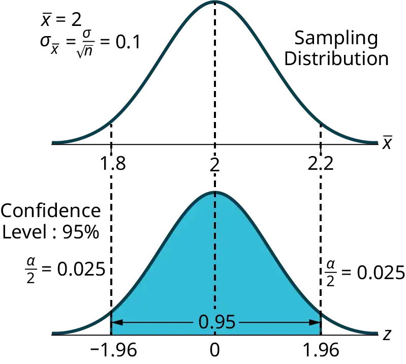
To capture the central 90%, we must go out 1.645 "standard deviations" on either side of the calculated sample mean. The value 1.645 is the z-score from a standard normal probability distribution that puts an area of 0.90 in the center, an area of 0.05 in the far left tail, and an area of 0.05 in the far right tail.
It is important that the "standard deviation" used must be appropriate for the parameter we are estimating, so in this section we need to use the standard deviation that applies to sample means, which is \(\frac{\sigma}{\sqrt{n}}\). The fraction \(\frac{\sigma}{\sqrt{n}}\), is commonly called the "standard error of the mean" in order to distinguish clearly the standard deviation for a mean from the population standard deviation σ.
*In summary, as a result of the central limit theorem:*
- \(\bar{X}\) is normally distributed, that is, \(\bar{X}\) ~ N\(\left( \mu_{X},\frac{\sigma}{\sqrt{n}} \right)\).
- When the population standard deviation σ is known, we use a normal distribution to calculate the error bound.
Calculating the Confidence Interval¶
To construct a confidence interval estimate for an unknown population mean, we need data from a random sample. The steps to construct and interpret the confidence interval are:
- Calculate the sample mean \(\bar{x}\) from the sample data. Remember, in this section we already know the population standard deviation σ.
- Find the z-score that corresponds to the confidence level.
- Calculate the error bound EBM.
- Construct the confidence interval.
- Write a sentence that interprets the estimate in the context of the situation in the problem. (Explain what the confidence interval means, in the words of the problem.)
We will first examine each step in more detail, and then illustrate the process with some examples.
Finding the z-score for the Stated Confidence Level¶
When we know the population standard deviation σ, we use a standard normal distribution to calculate the error bound EBM and construct the confidence interval. We need to find the value of z that puts an area equal to the confidence level (in decimal form) in the middle of the standard normal distribution Z ~ N(0, 1).
The confidence level, CL, is the area in the middle of the standard normal distribution. CL = 1 – α, so α is the area that is split equally between the two tails. Each of the tails contains an area equal to \(\frac{\alpha}{2}\).
The z-score that has an area to the right of \(\frac{\alpha}{2}\) is denoted by \(z_{\frac{\alpha}{2}}\).
For example, when CL = 0.95, α = 0.05 and \(\frac{\alpha}{2}\) = 0.025; we write \(z_{\frac{\alpha}{2}}\) = z0.025.
The area to the right of z0.025 is 0.025 and the area to the left of z0.025 is 1 – 0.025 = 0.975.
\(z_{\frac{\alpha}{2}}\ \text{=}\ z_{0.025}\ \text{= 1}.96\), using a calculator, computer or a standard normal probability table.
Using the Calculator
invNorm(0.975, 0, 1) = 1.96
NOTE
Remember to use the area to the LEFT of \(z_{\frac{\alpha}{2}}\); in this chapter the last two inputs in the invNorm command are 0, 1, because you are using a standard normal distribution Z ~ N(0, 1).
Writing the Interpretation¶
The interpretation should clearly state the confidence level (CL), explain what population parameter is being estimated (here, a population mean), and state the confidence interval (both endpoints). "We estimate with ___% confidence that the true population mean (include the context of the problem) is between ___ and ___ (include appropriate units)."
Example 8.2
Suppose scores on exams in statistics are normally distributed with an unknown population mean and a population standard deviation of three points. A random sample of 36 scores is taken and gives a sample mean (sample mean score) of 68. Find a confidence interval estimate for the population mean exam score (the mean score on all exams).
Find a 90% confidence interval for the true (population) mean of statistics exam scores.
Solution
- You can use technology to calculate the confidence interval directly.
- The first solution is shown step-by-step.
- The second solution uses the TI-83, 83+, and 84+ calculators.
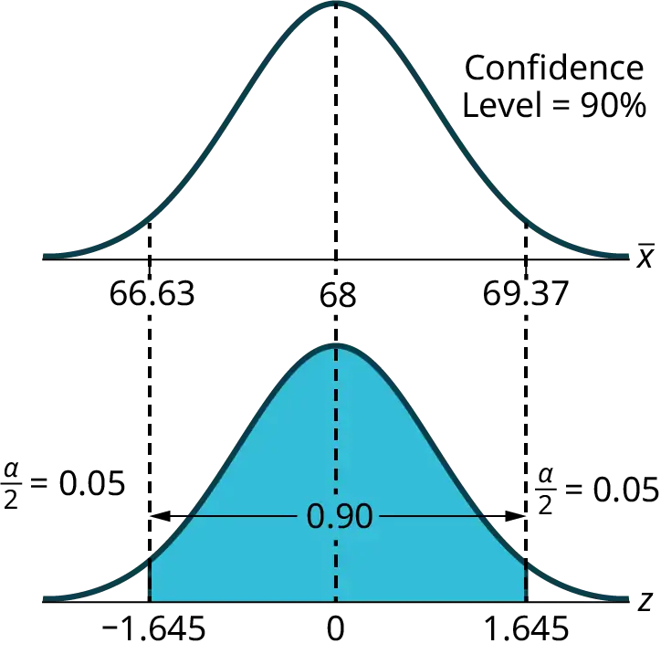
The solution is shown step by step:
The formula for a confidence interval for an unknown population mean assuming we know the population standard deviation is:
For a 90% confidence interval, visualize an area of 0.90 centered under the normal curve (See Figure 8.3). The remaining area for the two tails of the normal distribution is then 0.10, which indicates that the area in the left tail is one-half of 0.10, which is 0.05. The corresponding z-score that cuts off an area of 0.05 in the left tail is 1.645.
In this example we are given that the population standard deviation \(\sigma=3\).
We are also given that the sample size n = 36 and the sample mean \(\bar{X}=68\).
Substituting these values in the confidence interval formula results in the following:
We estimate with 90% confidence that the true population mean exam score for all statistics students is between 67.18 and 68.82.
Solution
Using the Calculator
Press STAT and arrow over to TESTS.
Arrow down to 7:ZInterval.
Press ENTER.
Arrow to Stats and press ENTER.
Arrow down and enter three for σ, 68 for \(\bar{x}\), 36 for n, and .90 for C-level.
Arrow down to Calculate and press ENTER.
The confidence interval is (to three decimal places)(67.178, 68.822).
Explanation of 90% Confidence Level: Ninety percent of all confidence intervals constructed in this way contain the true mean statistics exam score. For example, if we constructed 100 of these confidence intervals, we would expect 90 of them to contain the true population mean exam score.
Try It
Suppose average pizza delivery times are normally distributed with an unknown population mean and a population standard deviation of six minutes. A random sample of 28 pizza delivery restaurants is taken and has a sample mean delivery time of 36 minutes.
Find a 90% confidence interval estimate for the population mean delivery time.
Answer
(34.1347, 37.8653)
Example 8.3
The Specific Absorption Rate (SAR) for a cell phone measures the amount of radio frequency (RF) energy absorbed by the user’s body when using the handset. Every cell phone emits RF energy. Different phone models have different SAR measures. To receive certification from the Federal Communications Commission (FCC) for sale in the United States, the SAR level for a cell phone must be no more than 1.6 watts per kilogram. Table 8.1 shows the highest SAR level for a random selection of cell phone models as measured by the FCC.
Table 8.1
| SAR Data for a sample of 30 cell phones | ||
|---|---|---|
| 1.11 | 1.36 | 0.74 |
| 1.48 | 1.34 | 0.5 |
| 1.43 | 1.18 | 0.4 |
| 1.3 | 1.3 | 0.867 |
| 1.09 | 1.26 | 0.68 |
| 0.455 | 1.29 | 0.51 |
| 1.41 | 0.36 | 1.13 |
| 0.82 | 0.52 | 0.3 |
| 0.78 | 1.6 | 1.48 |
| 1.25 | 1.39 | 1.38 |
Find a 98% confidence interval for the true (population) mean of the Specific Absorption Rates (SARs) for cell phones. Assume that the population standard deviation is σ = 0.337.
Solution
To find the confidence interval, start by finding the point estimate: the sample mean.
\(\bar{x}=1.024\)
Next, find the EBM. Because you are creating a 98% confidence interval, CL = 0.98.
You need to find z0.01 having the property that the area under the normal density curve to the right of z0.01 is 0.01 and the area to the left is 0.99. Use your calculator, a computer, or a probability table for the standard normal distribution to find z0.01 = 2.326.
\(EBM=(z_{0.01})\frac{\sigma}{\sqrt{n}}=(2.326)\frac{0.337}{\sqrt{30}}=0.1431\)
To find the 98% confidence interval, find \(\bar{x}\pm EBM\).
\(\bar{x}\) – EBM = 1.024 – 0.1431 = 0.8809
\(\bar{x}\) – EBM = 1.024 – 0.1431 = 1.1671
We estimate with 98% confidence that the true SAR mean for the population of cell phones in the United States is between 0.8809 and 1.1671 watts per kilogram.
Solution
Using the Calculator
Press STAT and arrow over to TESTS.
Arrow down to 7:ZInterval.
Press ENTER.
Arrow to Stats and press ENTER.
Arrow down and enter the following values:
σ: 0.337
\(\bar{x}:1.024\)
n: 30
C-level: 0.98
Arrow down to Calculate and press ENTER.
The confidence interval is (to three decimal places) (0.881, 1.167).
Try It
Table 8.2 shows a different random sampling of 20 cell phone models. Use this data to calculate a 93% confidence interval for the true mean SAR for cell phones certified for use in the United States. As previously, assume that the population standard deviation is σ = 0.337.
Table 8.2
| SAR Data for a sample of 20 cell phones | |
|---|---|
| 1.48 | 1.53 |
| 0.8 | 0.68 |
| 1.15 | 1.4 |
| 1.36 | 1.24 |
| 0.77 | 0.57 |
| 0.462 | 0.2 |
| 1.36 | 0.51 |
| 1.39 | 0.3 |
| 1.3 | 0.73 |
| 0.7 | 0.869 |
Notice the difference in the confidence intervals calculated in Example 8.3 and the following Try It exercise. These intervals are different for several reasons: they were calculated from different samples, the samples were different sizes, and the intervals were calculated for different levels of confidence. Even though the intervals are different, they do not yield conflicting information. The effects of these kinds of changes are the subject of the next section in this chapter.
Changing the Confidence Level or Sample Size¶
Example 8.4
Suppose we change the original problem in Example 8.2 by using a 95% confidence level. Find a 95% confidence interval for the true (population) mean statistics exam score.
Solution
To find the confidence interval, you need the sample mean, \(\bar{x}\), and the EBM.
\(\bar{x}\) = 68
EBM = \(\left( z_{\frac{\alpha}{2}} \right)\left( \frac{\sigma}{\sqrt{n}} \right)\)
σ = 3; n = 36; The confidence level is 95% (CL = 0.95).
CL = 0.95 so α = 1 – CL = 1 – 0.95 = 0.05
\(\frac{\alpha}{2}=0.025\ \ \ z_{\frac{\alpha}{2}}=z_{0.025}\)
The area to the right of z0.025 is 0.025 and the area to the left of z0.025 is 1 – 0.025 = 0.975.
\(z_{\frac{\alpha}{2}}=z_{0.025}=1.96\)
when using invnorm(0.975,0,1) on the TI-83, 83+, or 84+ calculators. (This can also be found using appropriate commands on other calculators, using a computer, or using a probability table for the standard normal distribution.)
EBM = (1.96)\(\left( \frac{3}{\sqrt{36}} \right)\) = 0.98
\(\bar{x}\) – EBM = 68 – 0.98 = 67.02
\(\bar{x}\) + EBM = 68 + 0.98 = 68.98
Notice that the EBM is larger for a 95% confidence level in the original problem.
We estimate with 95% confidence that the true population mean for all statistics exam scores is between 67.02 and 68.98.
Explanation of 95% Confidence Level: Ninety-five percent of all confidence intervals constructed in this way contain the true value of the population mean statistics exam score.
Comparing the results: The 90% confidence interval is (67.18, 68.82). The 95% confidence interval is (67.02, 68.98). The 95% confidence interval is wider. If you look at the graphs, because the area 0.95 is larger than the area 0.90, it makes sense that the 95% confidence interval is wider. To be more confident that the confidence interval actually does contain the true value of the population mean for all statistics exam scores, the confidence interval necessarily needs to be wider.
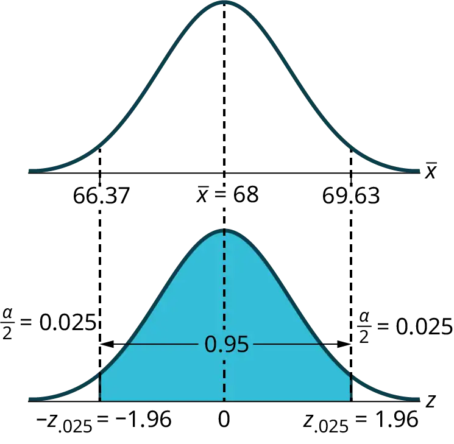
Summary: Effect of Changing the Confidence Level
- Increasing the confidence level increases the error bound, making the confidence interval wider.
- Decreasing the confidence level decreases the error bound, making the confidence interval narrower.
Try It
Refer back to the pizza-delivery Try It exercise. The population standard deviation is six minutes and the sample mean deliver time is 36 minutes. Use a sample size of 20. Find a 95% confidence interval estimate for the true mean pizza delivery time.
Example 8.5
Suppose we change the original problem in Example 8.2 to see what happens to the error bound if the sample size is changed.
Leave everything the same except the sample size. Use the original 90% confidence level. What happens to the error bound and the confidence interval if we increase the sample size and use n = 100 instead of n = 36? What happens if we decrease the sample size to n = 25 instead of n = 36?
- \(\bar{x}\) = 68
- EBM = \(\left( z_{\frac{\alpha}{2}} \right)\left( \frac{\sigma}{\sqrt{n}} \right)\)
- σ = 3; The confidence level is 90% (CL=0.90); \(z_{\frac{\alpha}{2}}\) = z0.05 = 1.645.
Solution
If we increase the sample size n to 100, we decrease the error bound.
When n = 100: EBM = \(\left( z_{\frac{\alpha}{2}} \right)\left( \frac{\sigma}{\sqrt{n}} \right)\) = (1.645)\(\left( \frac{3}{\sqrt{100}} \right)\) = 0.4935.
Solution
If we decrease the sample size n to 25, we increase the error bound.
When n = 25: EBM = \(\left( z_{\frac{\alpha}{2}} \right)\left( \frac{\sigma}{\sqrt{n}} \right)\) = (1.645)\(\left( \frac{3}{\sqrt{25}} \right)\) = 0.987.
Summary: Effect of Changing the Sample Size
- Increasing the sample size causes the error bound to decrease, making the confidence interval narrower.
- Decreasing the sample size causes the error bound to increase, making the confidence interval wider.
Try It
Refer back to the pizza-delivery Try It exercise. The mean delivery time is 36 minutes and the population standard deviation is six minutes. Assume the sample size is changed to 50 restaurants with the same sample mean. Find a 90% confidence interval estimate for the population mean delivery time.
Working Backwards to Find the Error Bound or Sample Mean¶
When we calculate a confidence interval, we find the sample mean, calculate the error bound, and use them to calculate the confidence interval. However, sometimes when we read statistical studies, the study may state the confidence interval only. If we know the confidence interval, we can work backwards to find both the error bound and the sample mean.
*Finding the Error Bound*
- From the upper value for the interval, subtract the sample mean,
- OR, from the upper value for the interval, subtract the lower value. Then divide the difference by two.
*Finding the Sample Mean*
- Subtract the error bound from the upper value of the confidence interval,
- OR, average the upper and lower endpoints of the confidence interval.
Notice that there are two methods to perform each calculation. You can choose the method that is easier to use with the information you know.
Example 8.6
Suppose we know that a confidence interval is (67.18, 68.82) and we want to find the error bound. We may know that the sample mean is 68, or perhaps our source only gave the confidence interval and did not tell us the value of the sample mean.
Calculate the Error Bound:
- If we know that the sample mean is 68: EBM = 68.82 – 68 = 0.82.
- If we don't know the sample mean: EBM = \(\frac{(68.82-67.18)}{2}\) = 0.82.
Calculate the Sample Mean:
- If we know the error bound: \(\bar{x}\) = 68.82 – 0.82 = 68
- If we don't know the error bound: \(\bar{x}\) = \(\frac{(67.18+68.82)}{2}\) = 68.
Try It
Suppose we know that a confidence interval is (42.12, 47.88). Find the error bound and the sample mean.
Calculating the Sample Size n¶
If researchers desire a specific margin of error, then they can use the error bound formula to calculate the required sample size.
The error bound formula for a population mean when the population standard deviation is known is
EBM = \(\left( z_{\frac{\alpha}{2}} \right)\left( \frac{\sigma}{\sqrt{n}} \right)\).
The formula for sample size is n = \(\frac{z^{2}\sigma^{2}}{EBM^{2}}\), found by solving the error bound formula for n.
In this formula, z is \(z_{\frac{\alpha}{2}}\), corresponding to the desired confidence level. A researcher planning a study who wants a specified confidence level and error bound can use this formula to calculate the size of the sample needed for the study.
Example 8.7
The population standard deviation for the age of Foothill College students is 15 years. If we want to be 95% confident that the sample mean age is within two years of the true population mean age of Foothill College students, how many randomly selected Foothill College students must be surveyed?
From the problem, we know that σ = 15 and EBM = 2.
z = z0.025 = 1.96, because the confidence level is 95%.
n = \(\frac{z^{2}\sigma^{2}}{EBM^{2}}\) = \(\frac{{(1.96)}^{2}{(15)}^{2}}{2^{2}}\) = 216.09 using the sample size equation.
Use n = 217: Always round the answer UP to the next higher integer to ensure that the sample size is large enough.
Therefore, 217 Foothill College students should be surveyed in order to be 95% confident that we are within two years of the true population mean age of Foothill College students.
Try It
The population standard deviation for the height of high school basketball players is three inches. If we want to be 95% confident that the sample mean height is within one inch of the true population mean height, how many randomly selected students must be surveyed?
8.2 A Single Population Mean using the Student t Distribution¶
In practice, we rarely know the population standard deviation. In the past, when the sample size was large, this did not present a problem to statisticians. They used the sample standard deviation s as an estimate for σ and proceeded as before to calculate a confidence interval with close enough results. However, statisticians ran into problems when the sample size was small. A small sample size caused inaccuracies in the confidence interval.
William S. Gosset (1876–1937) of the Guinness brewery in Dublin, Ireland ran into this problem. His experiments with hops and barley produced very few samples. Just replacing σ with s did not produce accurate results when he tried to calculate a confidence interval. He realized that he could not use a normal distribution for the calculation; he found that the actual distribution depends on the sample size. This problem led him to "discover" what is called the Student's t-distribution. The name comes from the fact that Gosset wrote under the pen name "Student."
Up until the mid-1970s, some statisticians used the normal distribution approximation for large sample sizes and used the Student's t-distribution only for sample sizes of at most 30. With graphing calculators and computers, the practice now is to use the Student's t-distribution whenever s is used as an estimate for σ.
If you draw a simple random sample of size n from a population that has an approximately normal distribution with mean μ and unknown population standard deviation σ and calculate the t-score t = \(\frac{\bar{x}-\mu}{\left( \frac{s}{\sqrt{n}} \right)}\), then the t-scores follow a Student's t-distribution with n – 1 degrees of freedom. The t*-score has the same interpretation as the z-score. It measures how far \(\bar{x}\) is from its mean μ. For each sample size n*, there is a different Student's t-distribution.
The degrees of freedom, n – 1, come from the calculation of the sample standard deviation s. This calculation requires n deviations \((x-\bar{x}\ \text{values})\). Because the sum of the deviations is zero, we can find the last deviation once we know the other n – 1 deviations. The other n – 1 deviations can change or vary freely. We call the number n – 1 the degrees of freedom (df).
Properties of the Student's t-Distribution
- The graph for the Student's t-distribution is similar to the standard normal curve.
- The mean for the Student's t-distribution is zero and the distribution is symmetric about zero.
- The Student's t-distribution has more probability in its tails than the standard normal distribution because the spread of the t-distribution is greater than the spread of the standard normal. So the graph of the Student's t-distribution will be thicker in the tails and shorter in the center than the graph of the standard normal distribution.
- The exact shape of the Student's t-distribution depends on the degrees of freedom. As the degrees of freedom increases, the graph of Student's t-distribution becomes more like the graph of the standard normal distribution.
- The underlying population of individual observations is assumed to be normally distributed with unknown population mean μ and unknown population standard deviation σ. The size of the underlying population is generally not relevant unless it is very small. If it is bell shaped (normal) then the assumption is met and doesn't need discussion. Random sampling is assumed, but that is a completely separate assumption from normality.
Calculators and computers can easily calculate any Student's t-probabilities. The TI-83,83+, and 84+ have a tcdf function to find the probability for given values of t. The grammar for the tcdf command is tcdf(lower bound, upper bound, degrees of freedom). However for confidence intervals, we need to use inverse probability to find the value of t when we know the probability.
For the TI-84+ you can use the invT command on the DISTRibution menu. The invT command works similarly to the invnorm. The invT command requires two inputs: invT(area to the left, degrees of freedom) The output is the t-score that corresponds to the area we specified.
The TI-83 and 83+ do not have the invT command. (The TI-89 has an inverse T command.)
A probability table for the Student's t-distribution can also be used. The table gives t-scores that correspond to the confidence level (column) and degrees of freedom (row). (The TI-86 does not have an invT program or command, so if you are using that calculator, you need to use a probability table for the Student's t-Distribution.) When using a t-table, note that some tables are formatted to show the confidence level in the column headings, while the column headings in some tables may show only corresponding area in one or both tails.
A Student's t table (See Appendix H Tables) gives t-scores given the degrees of freedom and the right-tailed probability. The table is very limited. Calculators and computers can easily calculate any Student's t-probabilities.
*The notation for the Student's t-distribution (using T* as the random variable) is:**
- T ~ tdf where df = n – 1.
- For example, if we have a sample of size n = 20 items, then we calculate the degrees of freedom as df = n - 1 = 20 - 1 = 19 and we write the distribution as T ~ t19.
If the population standard deviation is not known, the error bound for a population mean is:
- \(EBM=\left( t_{\frac{\alpha}{2}} \right)\left( \frac{s}{\sqrt{n}} \right)\),
- \(t_{\frac{\sigma}{2}}\) is the t-score with area to the right equal to \(\frac{\alpha}{2}\),
- use df = n – 1 degrees of freedom, and
- s = sample standard deviation.
The format for the confidence interval is:
\((\bar{x}-EBM,\bar{x}+EBM)\).
Using the Calculator
To calculate the confidence interval directly:
Press STAT.
Arrow over to TESTS.
Arrow down to 8:TInterval and press ENTER (or just press 8).
Example 8.8
Suppose you do a study of acupuncture to determine how effective it is in relieving pain. You measure sensory rates for 15 subjects with the results given. Use the sample data to construct a 95% confidence interval for the mean sensory rate for the population (assumed normal) from which you took the data.
The solution is shown step-by-step and by using the TI-83, 83+, or 84+ calculators.
8.6
9.4
7.9
6.8
8.3
7.3
9.2
9.6
8.7
11.4
10.3
5.4
8.1
5.5
6.9
Solution
- The first solution is step-by-step.
- The second solution uses the TI-83+ and TI-84 calculators.
To find the confidence interval, you need the sample mean, \(\bar{x}\), and the EBM.
\(\bar{x}\) = 8.2267 s = 1.6722 n = 15
df = 15 – 1 = 14 CL so α = 1 – CL = 1 – 0.95 = 0.05
\(\frac{\alpha}{2}\) = 0.025 \(t_{\frac{\alpha}{2}}=t_{0.025}\)
The area to the right of t0.025 is 0.025, and the area to the left of t0.025 is 1 – 0.025 = 0.975
\(t_{\frac{\alpha}{2}}=t_{0.025}=2.14\) using invT(.975,14) on the TI-84+ calculator.
\(EBM=\left( t_{\frac{\alpha}{2}} \right)\left( \frac{s}{\sqrt{n}} \right)\)
\(EBM=(2.14)\left( \frac{1.6722}{\sqrt{15}} \right)=0.924\)
\(\bar{x}\) – EBM = 8.2267 – 0.9240 = 7.3
\(\bar{x}\) + EBM = 8.2267 + 0.9240 = 9.15
The 95% confidence interval is (7.30, 9.15).
We estimate with 95% confidence that the true population mean sensory rate is between 7.30 and 9.15.
Solution
Using the Calculator
Press STAT and arrow over to TESTS.
Arrow down to 8:TInterval and press ENTER (or you can just press 8).
Arrow to Data and press ENTER.
Arrow down to List and enter the list name where you put the data.
There should be a 1 after Freq.
Arrow down to C-level and enter 0.95
Arrow down to Calculate and press ENTER.
The 95% confidence interval is (7.3006, 9.1527)
NOTE
When calculating the error bound, a probability table for the Student's t-distribution can also be used to find the value of t. The table gives t-scores that correspond to the confidence level (column) and degrees of freedom (row); the t-score is found where the row and column intersect in the table.
Try It
You do a study of hypnotherapy to determine how effective it is in increasing the number of hours of sleep subjects get each night. You measure hours of sleep for 12 subjects with the following results. Construct a 95% confidence interval for the mean number of hours slept for the population (assumed normal) from which you took the data.
8.2; 9.1; 7.7; 8.6; 6.9; 11.2; 10.1; 9.9; 8.9; 9.2; 7.5; 10.5
Example 8.9
The Human Toxome Project (HTP) is working to understand the scope of industrial pollution in the human body. Industrial chemicals may enter the body through pollution or as ingredients in consumer products. The scientists at HTP tested cord blood samples for 20 newborn infants in the United States. The cord blood of the "In utero/newborn" group was tested for 430 industrial compounds, pollutants, and other chemicals, including chemicals linked to brain and nervous system toxicity, immune system toxicity, and reproductive toxicity, and fertility problems. There are health concerns about the effects of some chemicals on the brain and nervous system. Table 8.3 shows how many of the targeted chemicals were found in each infant’s cord blood.
Table 8.3
| 79 | 145 | 147 | 160 | 116 | 100 | 159 | 151 | 156 | 126 |
| 137 | 83 | 156 | 94 | 121 | 144 | 123 | 114 | 139 | 99 |
Use this sample data to construct a 90% confidence interval for the mean number of targeted industrial chemicals to be found in an in infant’s blood.
Solution
From the sample, you can calculate \(\bar{x}\) = 127.45 and s = 25.965. There are 20 infants in the sample, so n = 20, and df = 20 – 1 = 19.
You are asked to calculate a 90% confidence interval: CL = 0.90, so α = 1 – CL = 1 – 0.90 = 0.10
\(\frac{\alpha}{2}=0.05,\;t_{\frac{\alpha}{2}}=t_{0.05}\)
By definition, the area to the right of t0.05 is 0.05 and so the area to the left of t0.05 is 1 – 0.05 = 0.95.
Use a table, calculator, or computer to find that t0.05 = 1.729.
\(EBM=t_{\frac{\alpha}{2}}\left( \frac{s}{\sqrt{n}} \right)=1.729\left( \frac{25.965}{\sqrt{20}} \right)\approx 10.038\)
\(\bar{x}\) – EBM = 127.45 – 10.038 = 117.412
\(\bar{x}\) + EBM = 127.45 + 10.038 = 137.488
We estimate with 90% confidence that the mean number of all targeted industrial chemicals found in cord blood in the United States is between 117.412 and 137.488.
Solution
Using the Calculator
Enter the data as a list.
Press STAT and arrow over to TESTS.
Arrow down to 8:TInterval and press ENTER (or you can just press 8). Arrow to Data and press ENTER.
Arrow down to List and enter the list name where you put the data.
Arrow down to Freq and enter 1.
Arrow down to C-level and enter 0.90
Arrow down to Calculate and press ENTER.
The 90% confidence interval is (117.41, 137.49).
Try It
A random sample of statistics students were asked to estimate the total number of hours they spend watching television in an average week. The responses are recorded in Table 8.4. Use this sample data to construct a 98% confidence interval for the mean number of hours statistics students will spend watching television in one week.
Table 8.4
| 0 | 3 | 1 | 20 | 9 |
| 5 | 10 | 1 | 10 | 4 |
| 14 | 2 | 4 | 4 | 5 |
8.3 A Population Proportion¶
During an election year, we see articles in the newspaper that state confidence intervals in terms of proportions or percentages. For example, a poll for a particular candidate running for president might show that the candidate has 40% of the vote within three percentage points (if the sample is large enough). Often, election polls are calculated with 95% confidence, so, the pollsters would be 95% confident that the true proportion of voters who favored the candidate would be between 0.37 and 0.43: (0.40 – 0.03,0.40 + 0.03).
Investors in the stock market are interested in the true proportion of stocks that go up and down each week. Businesses that sell personal computers are interested in the proportion of households in the United States that own personal computers. Confidence intervals can be calculated for the true proportion of stocks that go up or down each week and for the true proportion of households in the United States that own personal computers.
The procedure to find the confidence interval, the sample size, the error bound, and the confidence level for a proportion is similar to that for the population mean, but the formulas are different.
How do you know you are dealing with a proportion problem? First, the underlying distribution is a binomial distribution. (There is no mention of a mean or average.) If X is a binomial random variable, then X ~ B(n, p) where n is the number of trials and p is the probability of a success. To form a proportion, take X, the random variable for the number of successes and divide it by n, the number of trials (or the sample size). The random variable \(p'\) (read "P prime") is that proportion,
\(P'=\frac{X}{n}\)
(Sometimes the random variable is denoted as \(\hat{P}\), read "P hat".)
When n is large and p is not close to zero or one, we can use the normal distribution to approximate the binomial.
\(X\sim N(np,\sqrt{npq})\)
If we divide the random variable, the mean, and the standard deviation by n, we get a normal distribution of proportions with \(p'\), called the estimated proportion, as the random variable. (Recall that a proportion as the number of successes divided by n.)
\(\frac{X}{n}=P'\text{\~{}}\ N\left( \frac{np}{n},\frac{\sqrt{npq}}{n} \right)\)
Using algebra to simplify : \(\frac{\sqrt{npq}}{n}=\sqrt{\frac{pq}{n}}\)
\(p'\) follows a normal distribution for proportions: \(\frac{X}{n}=P'\sim N\left( p,\sqrt{\frac{pq}{n}} \right)\)
The confidence interval has the form (\(p'\) – EBP, \(p'\) + EBP). EBP is error bound for the proportion.
\(p'\) = \(\frac{x}{n}\)
\(p'\) = the estimated proportion of successes (\(p'\) is a point estimate for p, the true proportion.)
x = the number of successes
n = the size of the sample
The error bound for a proportion is
\(EBP=\left( z_{\frac{\alpha}{2}} \right)\left( \sqrt{\frac{p'q'}{n}} \right)\) where \(q'\) = 1 – \(p'\)
This formula is similar to the error bound formula for a mean, except that the "appropriate standard deviation" is different. For a mean, when the population standard deviation is known, the appropriate standard deviation that we use is \(\frac{\sigma}{\sqrt{n}}\). For a proportion, the appropriate standard deviation is \(\sqrt{\frac{pq}{n}}\).
However, in the error bound formula, we use \(\sqrt{\frac{p'q'}{n}}\) as the standard deviation, instead of \(\sqrt{\frac{pq}{n}}\).
In the error bound formula, the sample proportions \(p'\) and \(q'\) are estimates of the unknown population proportions p and q. The estimated proportions \(p'\) and \(q'\) are used because p and q are not known. The sample proportions \(p'\) and \(q'\) are calculated from the data: \(p'\) is the estimated proportion of successes, and \(q'\) is the estimated proportion of failures.
The confidence interval can be used only if the number of successes \({\mathrm{np}}'\) and the number of failures \({\mathrm{nq}}'\) are both greater than five.
NOTE
For the normal distribution of proportions, the z-score formula is as follows.
If \(P'\text{\~{}}N\left( p,\sqrt{\frac{pq}{n}} \right)\) then the z-score formula is \(z=\frac{p'-p}{\sqrt{\frac{pq}{n}}}\)
Example 8.10
Suppose that a market research firm is hired to estimate the percent of adults living in a large city who have smartphones. Five hundred randomly selected adult residents in this city are surveyed to determine whether they have smartphones. Of the 500 people surveyed, 421 responded yes - they own smartphones. Using a 95% confidence level, compute a confidence interval estimate for the true proportion of adult residents of this city who have smartphones.
Solution
- The first solution is step-by-step.
- The second solution uses a function of the TI-83, 83+ or 84 calculators.
Let X = the number of people in the sample who have cell phones. X is binomial. \(X\sim B\left( 500,\frac{421}{500} \right)\).
To calculate the confidence interval, you must find \(p'\), \(q'\), and EBP.
n = 500
x = the number of successes = 421
\(p'=\frac{x}{n}=\frac{421}{500}=0.842\)
\(p'=0.842\) is the sample proportion; this is the point estimate of the population proportion.
\(q'=1-p'=1-0.842=0.158\)
Since CL = 0.95, then α = 1 – CL = 1 – 0.95 = 0.05 \(\left( \frac{\alpha}{2} \right)\) = 0.025.
Then \(z_{\frac{\alpha}{2}}=z_{0.025}=1.96\)
Use the TI-83, 83+, or 84+ calculator command invNorm(0.975,0,1) to find z0.025. Remember that the area to the right of z0.025 is 0.025 and the area to the left of z0.025 is 0.975. This can also be found using appropriate commands on other calculators, using a computer, or using a Standard Normal probability table.
\(EBP=\left( z_{\frac{\alpha}{2}} \right)\sqrt{\frac{p'q'}{n}}=(1.96)\sqrt{\frac{(0.842)(0.158)}{500}}=0.032\)
\(p'-EBP=0.842-0.032=0.81\)
\(p'+EBP=0.842+0.032=0.874\)
The confidence interval for the true binomial population proportion is \((p'-EBP,p'+EBP)=(0.810,0.874).\)
Interpretation: We estimate with 95% confidence that between 81% and 87.4% of all adult residents of this city have smartphones.
Explanation of 95% Confidence Level: Ninety-five percent of the confidence intervals constructed in this way would contain the true value for the population proportion of all adult residents of this city who have smartphones.
Solution
Using the Calculator
Press STAT and arrow over to TESTS.
Arrow down to A:1-PropZint. Press ENTER.
Arrow down to \(x\) and enter 421.
Arrow down to \(n\) and enter 500.
Arrow down to C-Level and enter .95.
Arrow down to Calculate and press ENTER.
The confidence interval is (0.81003, 0.87397).
Try It
Suppose 250 randomly selected people are surveyed to determine if they own a tablet. Of the 250 surveyed, 98 reported owning a tablet. Using a 95% confidence level, compute a confidence interval estimate for the true proportion of people who own tablets.
Example 8.11
For a class project, a political science student at a large university wants to estimate the percent of students who are registered voters. He surveys 500 students and finds that 300 are registered voters. Compute a 90% confidence interval for the true percent of students who are registered voters, and interpret the confidence interval.
Solution
- The first solution is step-by-step.
- The second solution uses a function of the TI-83, 83+, or 84 calculators.
x = 300 and n = 500
\(p'=\frac{x}{n}=\frac{300}{500}=0.600\)
\(q'=1-p'=1-0.600=0.400\)
Since CL = 0.90, then α = 1 – CL = 1 – 0.90 = 0.10\(\left( \frac{\alpha}{2} \right)\) = 0.05
\(z_{\frac{\alpha}{2}}\) = z0.05 = 1.645
Use the TI-83, 83+, or 84+ calculator command invNorm(0.95,0,1) to find z0.05. Remember that the area to the right of z0.05 is 0.05 and the area to the left of z0.05 is 0.95. This can also be found using appropriate commands on other calculators, using a computer, or using a standard normal probability table.
\(EBP=\left( z_{\frac{\alpha}{2}} \right)\sqrt{\frac{p'q'}{n}}=(1.645)\sqrt{\frac{(0.60)(0.40)}{500}}=0.036\)
\(p'-EBP=0.60-0.036=0.564\)
\(p'+EBP=0.60+0.036=0.636\)
The confidence interval for the true binomial population proportion is (\(p'\) – EBP, \(p'\) + EBP) = (0.564,0.636).
- Interpretation: We estimate with 90% confidence that the true percent of all students that are registered voters is between 56.4% and 63.6%.
- Alternate Wording: We estimate with 90% confidence that between 56.4% and 63.6% of ALL students are registered voters.
Explanation of 90% Confidence Level: Ninety percent of all confidence intervals constructed in this way contain the true value for the population percent of students that are registered voters.
Solution
Using the Calculator
Press STAT and arrow over to TESTS.
Arrow down to A:1-PropZint. Press ENTER.
Arrow down to \(x\) and enter 300.
Arrow down to \(n\) and enter 500.
Arrow down to C-Level and enter 0.90.
Arrow down to Calculate and press ENTER.
The confidence interval is (0.564, 0.636).
Try It
A student polls their school to see if students in the school district are for or against the new legislation regarding school uniforms. They survey 600 students and finds that 480 are against the new legislation.
a. Compute a 90% confidence interval for the true percent of students who are against the new legislation, and interpret the confidence interval.
b. In a sample of 300 students, 68% said they own an iPod and a smart phone. Compute a 97% confidence interval for the true percent of students who own an iPod and a smartphone.
“Plus Four” Confidence Interval for p¶
There is a certain amount of error introduced into the process of calculating a confidence interval for a proportion. Because we do not know the true proportion for the population, we are forced to use point estimates to calculate the appropriate standard deviation of the sampling distribution. Studies have shown that the resulting estimation of the standard deviation can be flawed.
Fortunately, there is a simple adjustment that allows us to produce more accurate confidence intervals. We simply pretend that we have four additional observations. Two of these observations are successes and two are failures. The new sample size, then, is n + 4, and the new count of successes is x + 2.
Computer studies have demonstrated the effectiveness of this method. It should be used when the confidence level desired is at least 90% and the sample size is at least ten.
Example 8.12
A random sample of 25 statistics students was asked: “Have you smoked a cigarette in the past week?” Six students reported smoking within the past week. Use the “plus-four” method to find a 95% confidence interval for the true proportion of statistics students who smoke.
Solution
Six students out of 25 reported smoking within the past week, so x = 6 and n = 25. Because we are using the “plus-four” method, we will use x = 6 + 2 = 8 and n = 25 + 4 = 29.
\(p'=\frac{x}{n}=\frac{8}{29}\approx 0.276\)
\(q'=1-p'=1-0.276=0.724\)
Since CL = 0.95, we know α = 1 – 0.95 = 0.05 and \(\frac{\alpha}{2}\) = 0.025.
\(z_{0.025}=1.96\)
\(EBP=\left( z_{\frac{\alpha}{2}} \right)\sqrt{\frac{p'q'}{n}}=(1.96)\sqrt{\frac{0.276(0.724)}{29}}\approx 0.163\)
\(p'\) – EBP = 0.276 – 0.163 = 0.113
\(p'\) + EBP = 0.276 + 0.163 = 0.439
We are 95% confident that the true proportion of all statistics students who smoke cigarettes is between 0.113 and 0.439.
Solution
Using the Calculator
Press STAT and arrow over to TESTS.
Arrow down to A:1-PropZint. Press ENTER.
REMINDER
Remember that the plus-four method assume an additional four trials: two successes and two failures. You do not need to change the process for calculating the confidence interval; simply update the values of x and n to reflect these additional trials.
Arrow down to x and enter eight.
Arrow down to n and enter 29.
Arrow down to C-Level and enter 0.95.
Arrow down to Calculate and press ENTER.
The confidence interval is (0.113, 0.439).
Try It
Out of a random sample of 65 first-year students at State University, 31 students have declared a major. Use the “plus-four” method to find a 96% confidence interval for the true proportion of first-year students at State University who have declared a major.
Example 8.13
A marketing research firm conducted a survey regarding the potential purchase of electric vehicles among adults aged 18–29. In a group of 50 adults aged 18–29, 13 of them reported they would consider the purchase of an electric vehicle. Use the “plus four” method to find a 90% confidence interval for the true proportion of adults aged 18–29 who would consider the purchase of an electric vehicle.
Solution
Using “plus-four,” we have x = 13 + 2 = 15 and n = 50 + 4 = 54.
\(p'=\frac{15}{54}\approx 0.278\)
\(q'=1-p'=1-0.241=0.722\)
Since CL = 0.90, we know α = 1 – 0.90 = 0.10 and \(\frac{\alpha}{2}\) = 0.05.
\(z_{0.05}=1.645\)
\(EBP=(z_{\frac{\alpha}{2}})\left( \sqrt{\frac{p'q'}{n}} \right)=(1.645)\left( \sqrt{\frac{(0.278)(0.722)}{54}} \right)\approx 0.100\)
\(p'\) – EBP = 0.278 – 0.100 = 0.178
\(p'\) + EBP = 0.278 + 0.100 = 0.378
We are 90% confident that between 17.8% and 37.8% of adults aged 18–29 would consider the purchase of an electric vehicle.
Solution
Using the Calculator
Press STAT and arrow over to TESTS.
Arrow down to A:1-PropZint. Press ENTER.
Arrow down to x and enter 15.
Arrow down to n and enter 54.
Arrow down to C-Level and enter 0.90.
Arrow down to Calculate and press ENTER.
The confidence interval is (0.178, 0.378).
Try It
The survey referenced in Example 8.13 talked to adults aged 18–29 in smaller focus groups but also interviewed additional individuals over the phone. When the study was complete, 588 adults aged 18–29 had answered the question about their potential purchase of an electric vehicle with 159 saying that they would consider such a purchase. Use the “plus-four” method to find a 90% confidence interval for the true proportion of adults aged 18–29 who would consider the purchase of an electric vehicle based on this larger sample. Compare the results to those in Example 8.13.
Calculating the Sample Size n¶
If researchers desire a specific margin of error, then they can use the error bound formula to calculate the required sample size.
The error bound formula for a population proportion is
- \(EBP=\left( z_{\frac{\alpha}{2}} \right)\left( \sqrt{\frac{p'q'}{n}} \right)\)
- Solving for n gives you an equation for the sample size.
- \(n=\frac{{\left( z_{\frac{\alpha}{2}} \right)}^{2}(p'q')}{EBP^{2}}\)
Example 8.14
Suppose a mobile phone company wants to determine the current percentage of customers aged 50+ who use text messaging on their cell phones. How many customers aged 50+ should the company survey in order to be 90% confident that the estimated (sample) proportion is within three percentage points of the true population proportion of customers aged 50+ who use text messaging on their cell phones.
Solution
From the problem, we know that EBP = 0.03 (3%=0.03) and \(z_{\frac{\alpha}{2}}\) z0.05 = 1.645 because the confidence level is 90%.
However, in order to find n, we need to know the estimated (sample) proportion p′. Remember that q′ = 1 – p′. But, we do not know p′ yet. Since we multiply p′ and q′ together, we make them both equal to 0.5 because p′q′ = (0.5)(0.5) = 0.25 results in the largest possible product. (Try other products: (0.6)(0.4) = 0.24; (0.3)(0.7) = 0.21; (0.2)(0.8) = 0.16 and so on). The largest possible product gives us the largest n. This gives us a large enough sample so that we can be 90% confident that we are within three percentage points of the true population proportion. To calculate the sample size n, use the formula and make the substitutions.
\(n=\frac{z^{2}p'q'}{EBP^{2}}\) gives \(n=\frac{{1.645}^{2}(0.5)(0.5)}{{0.03}^{2}}=751.7\)
Round the answer to the next higher value. The sample size should be 752 cell phone customers aged 50+ in order to be 90% confident that the estimated (sample) proportion is within three percentage points of the true population proportion of all customers aged 50+ who use text messaging on their cell phones.
Try It
Suppose an internet marketing company wants to determine the current percentage of customers who click on ads on their smartphones. How many customers should the company survey in order to be 90% confident that the estimated proportion is within five percentage points of the true population proportion of customers who click on ads on their smartphones?
8.4 Confidence Interval (Home Costs)¶
Lab: Confidence Interval (Home Costs)
Class Time:
Names:
Student Learning Outcomes
- The student will calculate the 90% confidence interval for the mean cost of a home in the area in which this school is located.
- The student will interpret confidence intervals.
- The student will determine the effects of changing conditions on the confidence interval.
Collect the Data
Check the Real Estate section in your local newspaper. Record the sale prices for 35 randomly selected homes recently listed in the county.
NOTE
Many newspapers list them only one day per week. Also, we will assume that homes come up for sale randomly.
1. Complete the table:
Table 8.5
Describe the Data
-
Compute the following:
a. \(\bar{x}\) = _____
b. \(s_{x}\) = _____
c. n = _____
-
In words, define the random variable \(\bar{X}\).
-
State the estimated distribution to use. Use both words and symbols.
Find the Confidence Interval
1. Calculate the confidence interval and the error bound.
a. Confidence Interval: _____
b. Error Bound: _____
2. How much area is in both tails (combined)? α = _____
3. How much area is in each tail? \(\frac{\alpha}{2}\) = _____
4. Fill in the blanks on the graph with the area in each section. Then, fill in the number line with the upper and lower limits of the confidence interval and the sample mean.
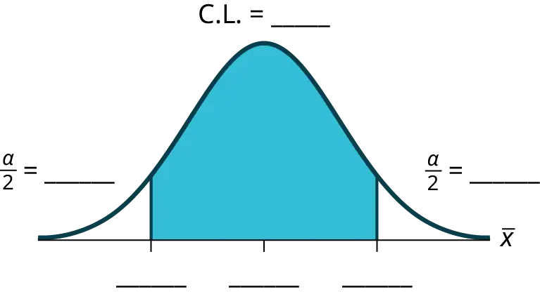
5. Some students think that a 90% confidence interval contains 90% of the data. Use the list of data on the first page and count how many of the data values lie within the confidence interval. What percent is this? Is this percent close to 90%? Explain why this percent should or should not be close to 90%.
Describe the Confidence Interval
- In two to three complete sentences, explain what a confidence interval means (in general), as if you were talking to someone who has not taken statistics.
- In one to two complete sentences, explain what this confidence interval means for this particular study.
Use the Data to Construct Confidence Intervals
1. Using the given information, construct a confidence interval for each confidence level given.
Table 8.6
| Confidence level | EBM/Error Bound | Confidence Interval |
|---|---|---|
| 50% | ||
| 80% | ||
| 95% | ||
| 99% |
2. What happens to the EBM as the confidence level increases? Does the width of the confidence interval increase or decrease? Explain why this happens.
8.5 Confidence Interval (Place of Birth)¶
Lab: Confidence Interval (Place of Birth)
Class Time:
Names:
Student Learning Outcomes
- The student will calculate the 90% confidence interval the proportion of students in this school who were born in this state.
- The student will interpret confidence intervals.
- The student will determine the effects of changing conditions on the confidence interval.
Collect the Data
-
Survey the students in your class, asking them if they were born in this state. Let X = the number that were born in this state.
a. n = ____________
b. x = ____________
-
In words, define the random variable P′.
-
State the estimated distribution to use.
Find the Confidence Interval and Error Bound
1. Calculate the confidence interval and the error bound.
a. Confidence Interval: _____
b. Error Bound: _____
2. How much area is in both tails (combined)? α = _____
3. How much area is in each tail? \(\frac{\alpha}{2}\) = _____
4. Fill in the blanks on the graph with the area in each section. Then, fill in the number line with the upper and lower limits of the confidence interval and the sample proportion.
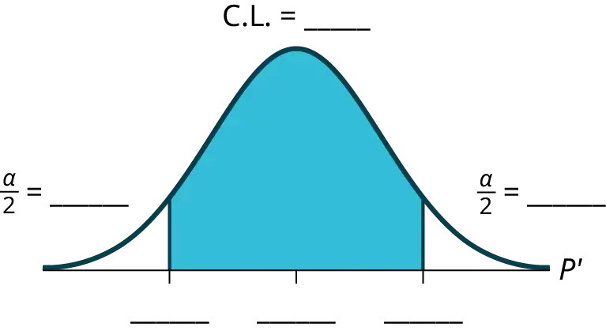
Describe the Confidence Interval
1. In two to three complete sentences, explain what a confidence interval means (in general), as though you were talking to someone who has not taken statistics.
2. In one to two complete sentences, explain what this confidence interval means for this particular study.
3. Construct a confidence interval for each confidence level given.
Table 8.7
| Confidence level | EBP/Error Bound | Confidence Interval |
|---|---|---|
| 50% | ||
| 80% | ||
| 95% | ||
| 99% |
4. What happens to the EBP as the confidence level increases? Does the width of the confidence interval increase or decrease? Explain why this happens.
8.6 Confidence Interval (Women's Heights)¶
Lab: Confidence Interval (Women's Heights)
Class Time:
Names:
Student Learning Outcomes
- The student will calculate a 90% confidence interval using the given data.
- The student will determine the relationship between the confidence level and the percentage of constructed intervals that contain the population mean.
Given:
Table 8.8 Heights of 100 Women (in Inches)
| 59.4 | 71.6 | 69.3 | 65.0 | 62.9 | 66.5 | 61.7 | 55.2 |
| 67.5 | 67.2 | 63.8 | 62.9 | 63.0 | 63.9 | 68.7 | 65.5 |
| 61.9 | 69.6 | 58.7 | 63.4 | 61.8 | 60.6 | 69.8 | 60.0 |
| 64.9 | 66.1 | 66.8 | 60.6 | 65.6 | 63.8 | 61.3 | 59.2 |
| 64.1 | 59.3 | 64.9 | 62.4 | 63.5 | 60.9 | 63.3 | 66.3 |
| 61.5 | 64.3 | 62.9 | 60.6 | 63.8 | 58.8 | 64.9 | 65.7 |
| 62.5 | 70.9 | 62.9 | 63.1 | 62.2 | 58.7 | 64.7 | 66.0 |
| 60.5 | 64.7 | 65.4 | 60.2 | 65.0 | 64.1 | 61.1 | 65.3 |
| 64.6 | 59.2 | 61.4 | 62.0 | 63.5 | 61.4 | 65.5 | 62.3 |
| 65.5 | 64.7 | 58.8 | 66.1 | 64.9 | 66.9 | 57.9 | 69.8 |
| 58.5 | 63.4 | 69.2 | 65.9 | 62.2 | 60.0 | 58.1 | 62.5 |
| 62.4 | 59.1 | 66.4 | 61.2 | 60.4 | 58.7 | 66.7 | 67.5 |
| 63.2 | 56.6 | 67.7 | 62.5 |
1. Table 8.8 lists the heights of 100 women. Use a random number generator to select ten data values randomly.
2. Calculate the sample mean and the sample standard deviation. Assume that the population standard deviation is known to be 3.3 inches. With these values, construct a 90% confidence interval for your sample of ten values. Write the confidence interval you obtained in the first space of Table 8.9.
3. Now write your confidence interval on the board. As others in the class write their confidence intervals on the board, copy them into Table 8.9.
Table 8.9 90% Confidence Intervals
| __________ | __________ | __________ | __________ | __________ |
| __________ | __________ | __________ | __________ | __________ |
| __________ | __________ | __________ | __________ | __________ |
| __________ | __________ | __________ | __________ | __________ |
| __________ | __________ | __________ | __________ | __________ |
| __________ | __________ | __________ | __________ | __________ |
| __________ | __________ | __________ | __________ | __________ |
| __________ | __________ | __________ | __________ | __________ |
Discussion Questions
- The actual population mean for the 100 heights given Table 8.8 is μ = 63.4. Using the class listing of confidence intervals, count how many of them contain the population mean μ; i.e., for how many intervals does the value of μ lie between the endpoints of the confidence interval?
- Divide this number by the total number of confidence intervals generated by the class to determine the percent of confidence intervals that contains the mean μ. Write this percent here: _____________.
- Is the percent of confidence intervals that contain the population mean μ close to 90%?
- Suppose we had generated 100 confidence intervals. What do you think would happen to the percent of confidence intervals that contained the population mean?
- When we construct a 90% confidence interval, we say that we are 90% confident that the true population mean lies within the confidence interval. Using complete sentences, explain what we mean by this phrase.
- Some students think that a 90% confidence interval contains 90% of the data. Use the list of data given (the heights of women) and count how many of the data values lie within the confidence interval that you generated based on that data. How many of the 100 data values lie within your confidence interval? What percent is this? Is this percent close to 90%?
- Explain why it does not make sense to count data values that lie in a confidence interval. Think about the random variable that is being used in the problem.
- Suppose you obtained the heights of ten women and calculated a confidence interval from this information. Without knowing the population mean μ, would you have any way of knowing for certain if your interval actually contained the value of μ? Explain.
Chapter Review¶
Key Terms¶
- Binomial Distribution
- a discrete random variable (RV) which arises from Bernoulli trials; there are a fixed number, n, of independent trials. “Independent” means that the result of any trial (for example, trial 1) does not affect the results of the following trials, and all trials are conducted under the same conditions. Under these circumstances the binomial RV X is defined as the number of successes in n trials. The notation is: X~B(n,p). The mean is μ = np and the standard deviation is σ = \(\sqrt{npq}\). The probability of exactly x successes in n trials is \(P(X=x)=\left( \genfrac{}{}{0pt}{}{n}{x} \right)p^{x}q^{n-x}\).
- Confidence Interval (CI)
- an interval estimate for an unknown population parameter. This depends on: the desired confidence level,; information that is known about the distribution (for example, known standard deviation),; the sample and its size.
- Confidence Level (CL)
- the percent expression for the probability that the confidence interval contains the true population parameter; for example, if the CL = 90%, then in 90 out of 100 samples the interval estimate will enclose the true population parameter.
- Degrees of Freedom (df)
- the number of objects in a sample that are free to vary
- Error Bound for a Population Mean (EBM)
- the margin of error; depends on the confidence level, sample size, and known or estimated population standard deviation.
- Inferential Statistics
- also called statistical inference or inductive statistics; this facet of statistics deals with estimating a population parameter based on a sample statistic. For example, if four out of the 100 calculators sampled are defective we might infer that four percent of the production is defective.
- Normal Distribution
- a continuous random variable (RV) with pdf \(f\text{(}x\text{)}=\frac{1}{\sigma\sqrt{2\pi}}e^{-{(x-\mu)}^{2}/2\sigma^{2}}\), where μ is the mean of the distribution and σ is the standard deviation, notation: X ~ N(μ,σ). If μ = 0 and σ = 1, the RV is called the standard normal distribution.
- Parameter
- a numerical characteristic of a population
- Point Estimate
- a single number computed from a sample and used to estimate a population parameter
- Standard Deviation
- a number that is equal to the square root of the variance and measures how far data values are from their mean; notation: s for sample standard deviation and σ for population standard deviation
- Student's t-Distribution
- investigated and reported by William S. Gossett in 1908 and published under the pseudonym Student; the major characteristics of the random variable (RV) are: It is continuous and assumes any real values.; The pdf is symmetrical about its mean of zero. However, it is more spread out and flatter at the apex than the normal distribution.; It approaches the standard normal distribution as n get larger.; There is a "family" of t–distributions: each representative of the family is completely defined by the number of degrees of freedom, which is one less than the number of data.
Chapter Review¶
8.1 A Single Population Mean using the Normal Distribution¶
In this module, we learned how to calculate the confidence interval for a single population mean where the population standard deviation is known. When estimating a population mean, the margin of error is called the error bound for a population mean (EBM). A confidence interval has the general form:
(lower bound, upper bound) = (point estimate – EBM, point estimate + EBM)
The calculation of EBM depends on the size of the sample and the level of confidence desired. The confidence level is the percent of all possible samples that can be expected to include the true population parameter. As the confidence level increases, the corresponding EBM increases as well. As the sample size increases, the EBM decreases. By the central limit theorem,
\(EBM=z\frac{\sigma}{\sqrt{n}}\)
Given a confidence interval, you can work backwards to find the error bound (EBM) or the sample mean. To find the error bound, find the difference of the upper bound of the interval and the mean. If you do not know the sample mean, you can find the error bound by calculating half the difference of the upper and lower bounds. To find the sample mean given a confidence interval, find the difference of the upper bound and the error bound. If the error bound is unknown, then average the upper and lower bounds of the confidence interval to find the sample mean.
Sometimes researchers know in advance that they want to estimate a population mean within a specific margin of error for a given level of confidence. In that case, solve the EBM formula for n to discover the size of the sample that is needed to achieve this goal:
\(n=\frac{z^{2}\sigma^{2}}{EBM^{2}}\)
8.2 A Single Population Mean using the Student t Distribution¶
In many cases, the researcher does not know the population standard deviation, σ, of the measure being studied. In these cases, it is common to use the sample standard deviation, s, as an estimate of σ. The normal distribution creates accurate confidence intervals when σ is known, but it is not as accurate when s is used as an estimate. In this case, the Student’s t-distribution is much better. Define a t-score using the following formula:
\(t=\frac{\bar{x}-\mu}{{s}/{\sqrt{n}}}\)
The t-score follows the Student’s t-distribution with n – 1 degrees of freedom. The confidence interval under this distribution is calculated with EBM = \(\left( t_{\frac{\alpha}{2}} \right)\frac{s}{\sqrt{n}}\) where \(t_{\frac{\alpha}{2}}\) is the t-score with area to the right equal to \(\frac{\alpha}{2}\), s is the sample standard deviation, and n is the sample size. Use a table, calculator, or computer to find \(t_{\frac{\alpha}{2}}\) for a given α.
8.3 A Population Proportion¶
Some statistical measures, like many survey questions, measure qualitative rather than quantitative data. In this case, the population parameter being estimated is a proportion. It is possible to create a confidence interval for the true population proportion following procedures similar to those used in creating confidence intervals for population means. The formulas are slightly different, but they follow the same reasoning.
Let \(p'\) represent the sample proportion, x/n, where x represents the number of successes and n represents the sample size. Let \(q'\) = 1 – \(p'\). Then the confidence interval for a population proportion is given by the following formula:
(lower bound, upper bound) \(=(p'-EBP,p'+EBP)=\left( p'-z\sqrt{\frac{p'q'}{n}},p'+z\sqrt{\frac{p'q'}{n}} \right)\)
The “plus four” method for calculating confidence intervals is an attempt to balance the error introduced by using estimates of the population proportion when calculating the standard deviation of the sampling distribution. Simply imagine four additional trials in the study; two are successes and two are failures. Calculate \(p'=\frac{x+2}{n+4}\), and proceed to find the confidence interval. When sample sizes are small, this method has been demonstrated to provide more accurate confidence intervals than the standard formula used for larger samples.
Formula Review¶
8.1 A Single Population Mean using the Normal Distribution¶
\(\bar{X}\sim N\left( \mu_{X},\frac{\sigma}{\sqrt{n}} \right)\) The distribution of sample means is normally distributed with mean equal to the population mean and standard deviation given by the population standard deviation divided by the square root of the sample size.
The general form for a confidence interval for a single population mean, known standard deviation, normal distribution is given by
(lower bound, upper bound) = (point estimate – EBM, point estimate + EBM)
= \((\bar{x}-EBM,\bar{x}+EBM)\)
= \(\left( \bar{x}-z\frac{\sigma}{\sqrt{n}},\bar{x}+z\frac{\sigma}{\sqrt{n}} \right)\)
EBM = \(z\frac{\sigma}{\sqrt{n}}\) = the error bound for the mean, or the margin of error for a single population mean; this formula is used when the population standard deviation is known.
CL = confidence level, or the proportion of confidence intervals created that are expected to contain the true population parameter
α = 1 – CL = the proportion of confidence intervals that will not contain the population parameter
\(z_{\frac{\alpha}{2}}\) = the z-score with the property that the area to the right of the z-score is \(\frac{\propto}{2}\) this is the z-score used in the calculation of "EBM where α = 1 – CL.
n = \(\frac{z^{2}\sigma^{2}}{EBM^{2}}\) = the formula used to determine the sample size (n) needed to achieve a desired margin of error at a given level of confidence
General form of a confidence interval
(lower value, upper value) = (point estimate−error bound, point estimate + error bound)
To find the error bound when you know the confidence interval
error bound = upper value−point estimate OR error bound = \(\frac{\text{upper value}-\text{lower value}}{2}\)
Single Population Mean, Known Standard Deviation, Normal Distribution
Use the Normal Distribution for Means, Population Standard Deviation is Known EBM = z\(\frac{\alpha}{2}\cdot\frac{\sigma}{\sqrt{n}}\)
The confidence interval has the format (\(\bar{x}\) − EBM, \(\bar{x}\) + EBM).
8.2 A Single Population Mean using the Student t Distribution¶
s = the standard deviation of sample values.
\(t=\frac{\bar{x}-\mu}{\frac{s}{\sqrt{n}}}\) is the formula for the t-score which measures how far away a measure is from the population mean in the Student’s t-distribution
df = n - 1; the degrees of freedom for a Student’s t-distribution where n represents the size of the sample
T~tdf the random variable, T, has a Student’s t-distribution with df degrees of freedom
\(EBM=t_{\frac{\alpha}{2}}\frac{s}{\sqrt{n}}\) = the error bound for the population mean when the population standard deviation is unknown
\(t_{\frac{\alpha}{2}}\) is the t-score in the Student’s t-distribution with area to the right equal to \(\frac{\alpha}{2}\)
The general form for a confidence interval for a single mean, population standard deviation unknown, Student's t is given by (lower bound, upper bound)
= (point estimate – EBM, point estimate + EBM)
= \(\left( \bar{x}-\frac{ts}{\sqrt{n}},\bar{x}\text{+}\ \frac{ts}{\sqrt{n}} \right)\)
8.3 A Population Proportion¶
p′ = x / n where x represents the number of successes and n represents the sample size. The variable p′ is the sample proportion and serves as the point estimate for the true population proportion.
q′ = 1 – p′
\(p'\sim N\left( p,\sqrt{\frac{pq}{n}} \right)\) The variable \(p'\) has a binomial distribution that can be approximated with the normal distribution shown here.
EBP = the error bound for a proportion = \(z_{\frac{\alpha}{2}}\sqrt{\frac{p'q'}{n}}\)
Confidence interval for a proportion:
(lower bound, upper bound) \(=(p'-EBP,p'+EBP)=\left( p'-z\sqrt{\frac{p'q'}{n}},p'+z\sqrt{\frac{p'q'}{n}} \right)\)
\(n=\frac{z_{\frac{\alpha}{2}}{}^{2}p'q'}{EBP^{2}}\) provides the number of participants needed to estimate the population proportion with confidence 1 - α and margin of error EBP.
Use the normal distribution for a single population proportion \(p'=\frac{x}{n}\)
\(EBP=\left( z_{\frac{\alpha}{2}} \right)\sqrt{\frac{p'q'}{n}}p'+q'=1\)
The confidence interval has the format (\(p'\) – EBP, \(p'\) + EBP).
\(\bar{x}\) is a point estimate for μ
\(p'\) is a point estimate for ρ
s is a point estimate for σ
References¶
References
8.1 A Single Population Mean using the Normal Distribution
“American Fact Finder.” U.S. Census Bureau. Available online at http://factfinder2.census.gov/faces/nav/jsf/pages/searchresults.xhtml?refresh=t (accessed July 2, 2013).
“Disclosure Data Catalog: Candidate Summary Report 2012.” U.S. Federal Election Commission. Available online at http://www.fec.gov/data/index.jsp (accessed July 2, 2013).
“Headcount Enrollment Trends by Student Demographics Ten-Year Fall Trends to Most Recently Completed Fall.” Foothill De Anza Community College District. Available online at http://research.fhda.edu/factbook/FH_Demo_Trends/FoothillDemographicTrends.htm (accessed September 30,2013).
Kuczmarski, Robert J., Cynthia L. Ogden, Shumei S. Guo, Laurence M. Grummer-Strawn, Katherine M. Flegal, Zuguo Mei, Rong Wei, Lester R. Curtin, Alex F. Roche, Clifford L. Johnson. “2000 CDC Growth Charts for the United States: Methods and Development.” Centers for Disease Control and Prevention. Available online at http://www.cdc.gov/growthcharts/2000growthchart-us.pdf (accessed July 2, 2013).
La, Lynn, Kent German. "Cell Phone Radiation Levels." c|net part of CBX Interactive Inc. Available online at http://reviews.cnet.com/cell-phone-radiation-levels/ (accessed July 2, 2013).
“Mean Income in the Past 12 Months (in 2011 Inflaction-Adjusted Dollars): 2011 American Community Survey 1-Year Estimates.” American Fact Finder, U.S. Census Bureau. Available online at http://factfinder2.census.gov/faces/tableservices/jsf/pages/productview.xhtml?pid=ACS_11_1YR_S1902&prodType=table (accessed July 2, 2013).
“Metadata Description of Candidate Summary File.” U.S. Federal Election Commission. Available online at http://www.fec.gov/finance/disclosure/metadata/metadataforcandidatesummary.shtml (accessed July 2, 2013).
“National Health and Nutrition Examination Survey.” Centers for Disease Control and Prevention. Available online at http://www.cdc.gov/nchs/nhanes.htm (accessed July 2, 2013).
8.2 A Single Population Mean using the Student t Distribution
“America’s Best Small Companies.” Forbes, 2013. Available online at http://www.forbes.com/best-small-companies/list/ (accessed July 2, 2013).
Data from Microsoft Bookshelf.
Data from http://www.businessweek.com/.
Data from http://www.forbes.com/.
“Disclosure Data Catalog: Leadership PAC and Sponsors Report, 2012.” Federal Election Commission. Available online at http://www.fec.gov/data/index.jsp (accessed July 2,2013).
“Human Toxome Project: Mapping the Pollution in People.” Environmental Working Group. Available online at http://www.ewg.org/sites/humantoxome/participants/participant-group.php?group=in+utero%2Fnewborn (accessed July 2, 2013).
“Metadata Description of Leadership PAC List.” Federal Election Commission. Available online at http://www.fec.gov/finance/disclosure/metadata/metadataLeadershipPacList.shtml (accessed July 2, 2013).
8.3 A Population Proportion
Jensen, Tom. “Democrats, Republicans Divided on Opinion of Music Icons.” Public Policy Polling. Available online at http://www.publicpolicypolling.com/Day2MusicPoll.pdf (accessed July 2, 2013).
Madden, Mary, Amanda Lenhart, Sandra Coresi, Urs Gasser, Maeve Duggan, Aaron Smith, and Meredith Beaton. “Teens, Social Media, and Privacy.” PewInternet, 2013. Available online at http://www.pewinternet.org/Reports/2013/Teens-Social-Media-And-Privacy.aspx (accessed July 2, 2013).
Prince Survey Research Associates International. “2013 Teen and Privacy Management Survey.” Pew Research Center: Internet and American Life Project. Available online at http://www.pewinternet.org/~/media//Files/Questionnaire/2013/Methods%20and%20Questions_Teens%20and%20Social%20Media.pdf (accessed July 2, 2013).
Saad, Lydia. “Three in Four U.S. Workers Plan to Work Pas Retirement Age: Slightly more say they will do this by choice rather than necessity.” Gallup® Economy, 2013. Available online at http://www.gallup.com/poll/162758/three-four-workers-plan-work-past-retirement-age.aspx (accessed July 2, 2013).
The Field Poll. Available online at http://field.com/fieldpollonline/subscribers/ (accessed July 2, 2013).
Zogby. “New SUNYIT/Zogby Analytics Poll: Few Americans Worry about Emergency Situations Occurring in Their Community; Only one in three have an Emergency Plan; 70% Support Infrastructure ‘Investment’ for National Security.” Zogby Analytics, 2013. Available online at http://www.zogbyanalytics.com/news/299-americans-neither-worried-nor-prepared-in-case-of-a-disaster-sunyit-zogby-analytics-poll (accessed July 2, 2013).
“52% Say Big-Time College Athletics Corrupt Education Process.” Rasmussen Reports, 2013. Available online at http://www.rasmussenreports.com/public_content/lifestyle/sports/may_2013/52_say_big_time_college_athletics_corrupt_education_process (accessed July 2, 2013).
Practice¶
8.1 A Single Population Mean using the Normal Distribution¶
Use the following information to answer the next five exercises: The standard deviation of the weights of elephants is known to be approximately 15 pounds. We wish to construct a 95% confidence interval for the mean weight of newborn elephant calves. Fifty newborn elephants are weighed. The sample mean is 244 pounds. The sample standard deviation is 11 pounds.
1. Identify the following:
- \(\bar{x}\) = _____
- σ = _____
- n = _____
Answer
- 244
- 15
- 50
2. In words, define the random variables X and \(\bar{X}\).
3. Which distribution should you use for this problem?
Answer
\(N\left( 244,\frac{15}{\sqrt{50}} \right)\)
4. Construct a 95% confidence interval for the population mean weight of newborn elephants. State the confidence interval, sketch the graph, and calculate the error bound.
5. What will happen to the confidence interval obtained, if 500 newborn elephants are weighed instead of 50? Why?
Answer
As the sample size increases, there will be less variability in the mean, so the interval size decreases.
Use the following information to answer the next seven exercises: The U.S. Census Bureau conducts a study to determine the time needed to complete the short form. The Bureau surveys 200 people. The sample mean is 8.2 minutes. There is a known standard deviation of 2.2 minutes. The population distribution is assumed to be normal.
6. Identify the following:
- \(\bar{x}\) = _____
- σ = _____
- n = _____
7. In words, define the random variables X and \(\bar{X}\).
Answer
X is the time in minutes it takes to complete the U.S. Census short form. \(\bar{X}\) is the mean time it took a sample of 200 people to complete the U.S. Census short form.
8. Which distribution should you use for this problem?
9. Construct a 90% confidence interval for the population mean time to complete the forms. State the confidence interval, sketch the graph, and calculate the error bound.
Answer
CI: (7.9441, 8.4559)
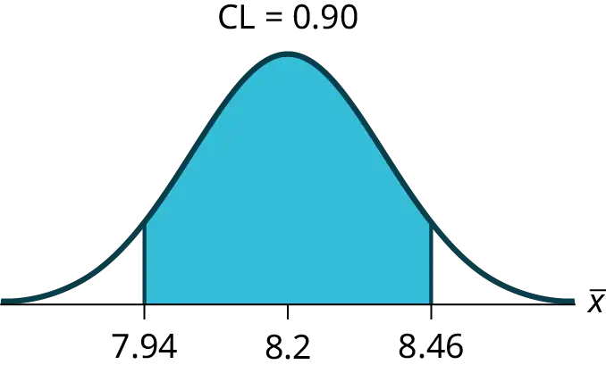
EBM = 0.26
10. If the Census wants to increase its level of confidence and keep the error bound the same by taking another survey, what changes should it make?
11. If the Census did another survey, kept the error bound the same, and surveyed only 50 people instead of 200, what would happen to the level of confidence? Why?
Answer
The level of confidence would decrease because decreasing n makes the confidence interval wider, so at the same error bound, the confidence level decreases.
12. Suppose the Census needed to be 98% confident of the population mean length of time. Would the Census have to survey more people? Why or why not?
Use the following information to answer the next ten exercises: A sample of 20 heads of lettuce was selected. Assume that the population distribution of head weight is normal. The weight of each head of lettuce was then recorded. The mean weight was 2.2 pounds with a standard deviation of 0.1 pounds. The population standard deviation is known to be 0.2 pounds.
13. Identify the following:
- \(\bar{x}\) = ______
- σ = ______
- n = ______
Answer
- \(\bar{x}\) = 2.2
- σ = 0.2
- n = 20
14. In words, define the random variable X.
15. In words, define the random variable \(\bar{X}\).
Answer
\(\bar{X}\) is the mean weight of a sample of 20 heads of lettuce.
16. Which distribution should you use for this problem?
17. Construct a 90% confidence interval for the population mean weight of the heads of lettuce. State the confidence interval, sketch the graph, and calculate the error bound.
Answer
EBM = 0.07
CI: (2.1264, 2.2736)
18. Construct a 95% confidence interval for the population mean weight of the heads of lettuce. State the confidence interval, sketch the graph, and calculate the error bound.
19. In complete sentences, explain why the confidence interval in Exercise 18 is wider than in Exercise 17.
Answer
The interval is greater because the level of confidence increased. If the only change made in the analysis is a change in confidence level, then all we are doing is changing how much area is being calculated for the normal distribution. Therefore, a larger confidence level results in larger areas and larger intervals.
20. In complete sentences, give an interpretation of what the interval in Exercise 18 means.
21. What would happen if 40 heads of lettuce were sampled instead of 20, and the error bound remained the same?
Answer
The confidence level would increase.
22. What would happen if 40 heads of lettuce were sampled instead of 20, and the confidence level remained the same?
Use the following information to answer the next 14 exercises: The mean age for all Foothill College students for a recent Fall term was 33.2. The population standard deviation has been pretty consistent at 15. Suppose that twenty-five Winter students were randomly selected. The mean age for the sample was 30.4. We are interested in the true mean age for Winter Foothill College students. Let X = the age of a Winter Foothill College student.
23. \(\bar{x}\) = _____
Answer
30.4
24. n = _____
25. ________ = 15
Answer
σ
26. In words, define the random variable \(\bar{X}\).
27. What is \(\bar{x}\) estimating?
Answer
μ
28. Is \(\sigma_{x}\) known?
29. As a result of your answer to Exercise 26, state the exact distribution to use when calculating the confidence interval.
Answer
normal
Construct a 95% Confidence Interval for the true mean age of Winter Foothill College students by working out then answering the next seven exercises.
30. How much area is in both tails (combined)? α =________
31. How much area is in each tail? \(\frac{\alpha}{2}\) =________
Answer
0.025
32. Identify the following specifications:
- lower limit
- upper limit
- error bound
33. The 95% confidence interval is:__________________.
Answer
(24.52,36.28)
34. Fill in the blanks on the graph with the areas, upper and lower limits of the confidence interval, and the sample mean.

35. In one complete sentence, explain what the interval means.
Answer
We are 95% confident that the true mean age for Winger Foothill College students is between 24.52 and 36.28.
36. Using the same mean, standard deviation, and level of confidence, suppose that n were 69 instead of 25. Would the error bound become larger or smaller? How do you know?
37. Using the same mean, standard deviation, and sample size, how would the error bound change if the confidence level were reduced to 90%? Why?
Answer
The error bound for the mean would decrease because as the CL decreases, you need less area under the normal curve (which translates into a smaller interval) to capture the true population mean.
8.2 A Single Population Mean using the Student t Distribution¶
Use the following information to answer the next five exercises. A hospital is trying to cut down on emergency room wait times. It is interested in the amount of time patients must wait before being called back to be examined. An investigation committee randomly surveyed 70 patients. The sample mean was 1.5 hours with a sample standard deviation of 0.5 hours.
38. Identify the following:
- \(\bar{x}\) =_______
- \(s_{x}\) =_______
- n =_______
- n – 1 =_______
39. Define the random variables X and \(\bar{X}\) in words.
Answer
X is the number of hours a patient waits in the emergency room before being called back to be examined. \(\bar{X}\) is the mean wait time of 70 patients in the emergency room.
40. Which distribution should you use for this problem?
41. Construct a 95% confidence interval for the population mean time spent waiting. State the confidence interval, sketch the graph, and calculate the error bound.
Answer
CI: (1.3808, 1.6192)
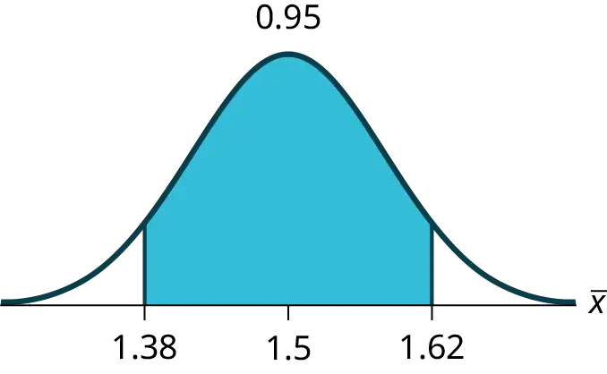
EBM = 0.12
42. Explain in complete sentences what the confidence interval means.
Use the following information to answer the next six exercises: One hundred eight Americans were surveyed to determine the number of hours they spend watching television each month. It was revealed that they watched an average of 151 hours each month with a standard deviation of 32 hours. Assume that the underlying population distribution is normal.
43. Identify the following:
- \(\bar{x}\) =_______
- \(s_{x}\) =_______
- n =_______
- n – 1 =_______
Answer
- \(\bar{x}\) = 151
- \(s_{x}\) = 32
- n = 108
- n – 1 = 107
44. Define the random variable X in words.
45. Define the random variable \(\bar{X}\) in words.
Answer
\(\bar{X}\) is the mean number of hours spent watching television per month from a sample of 108 Americans.
46. Which distribution should you use for this problem?
47. Construct a 99% confidence interval for the population mean hours spent watching television per month. (a) State the confidence interval, (b) sketch the graph, and (c) calculate the error bound.
Answer
CI: (142.92, 159.08)
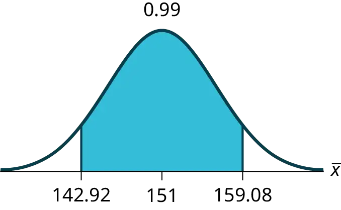
EBM = 8.08
48. Why would the error bound change if the confidence level were lowered to 95%?
Use the following information to answer the next 13 exercises: The data in Table 8.10 are the result of a random survey of 39 national flags (with replacement between picks) from various countries. We are interested in finding a confidence interval for the true mean number of colors on a national flag. Let X = the number of colors on a national flag.
Table 8.10
| X | Freq. |
|---|---|
| 1 | 1 |
| 2 | 7 |
| 3 | 18 |
| 4 | 7 |
| 5 | 6 |
49. Calculate the following:
- \(\bar{x}\) =______
- \(s_{x}\) =______
- n =______
Answer
- 3.26
- 1.02
- 39
50. Define the random variable \(\bar{X}\) in words.
51. What is \(\bar{x}\) estimating?
Answer
μ
52. Is \(\sigma_{x}\) known?
53. As a result of your answer to Exercise 52, state the exact distribution to use when calculating the confidence interval.
Answer
t38
Construct a 95% confidence interval for the true mean number of colors on national flags.
54. How much area is in both tails (combined)?
55. How much area is in each tail?
Answer
0.025
56. Calculate the following:
- lower limit
- upper limit
- error bound
57. The 95% confidence interval is_____.
Answer
(2.93, 3.59)
58. Fill in the blanks on the graph with the areas, the upper and lower limits of the Confidence Interval and the sample mean.
59. In one complete sentence, explain what the interval means.
Answer
We are 95% confident that the true mean number of colors for national flags is between 2.93 colors and 3.59 colors.
60. Using the same \(\bar{x}\), \(s_{x}\), and level of confidence, suppose that n were 69 instead of 39. Would the error bound become larger or smaller? How do you know?
Answer
The error bound would become EBM = 0.245. This error bound decreases because as sample sizes increase, variability decreases and we need less interval length to capture the true mean.
61. Using the same \(\bar{x}\), \(s_{x}\), and n = 39, how would the error bound change if the confidence level were reduced to 90%? Why?
8.3 A Population Proportion¶
Use the following information to answer the next two exercises: Marketing companies are interested in knowing the population percent of women who make the majority of household purchasing decisions.
62. When designing a study to determine this population proportion, what is the minimum number you would need to survey to be 90% confident that the population proportion is estimated to within 0.05?
63. If it were later determined that it was important to be more than 90% confident and a new survey were commissioned, how would it affect the minimum number you need to survey? Why?
Answer
The sample size needed would increase. As the confidence level increases, \(\alpha\) decreases and \(z_{\left( \frac{a}{2} \right)}\) increases. To maintain the same error bound, the size of the sample needs to increase.
Use the following information to answer the next five exercises: Suppose the marketing company did do a survey. They randomly surveyed 200 households and found that in 120 of them, the woman made the majority of the purchasing decisions. We are interested in the population proportion of households where women make the majority of the purchasing decisions.
64. Identify the following:
- x = ______
- n = ______
- \(p'\) = ______
65. Define the random variables X and \(p'\) in words.
Answer
X is the number of “successes” where the woman makes the majority of the purchasing decisions for the household. P′ is the percentage of households sampled where the woman makes the majority of the purchasing decisions for the household.
66. Which distribution should you use for this problem?
67. Construct a 95% confidence interval for the population proportion of households where the women make the majority of the purchasing decisions. State the confidence interval, sketch the graph, and calculate the error bound.
Answer
CI: (0.5321, 0.6679)
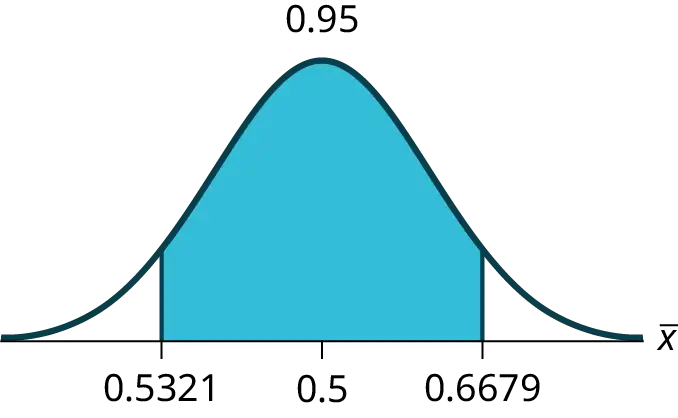
EBM: 0.0679
68. List two difficulties the company might have in obtaining random results, if this survey were done by email.
Use the following information to answer the next five exercises: Of 1,050 randomly selected adults, 360 identified themselves as manual laborers, 280 identified themselves as non-manual wage earners, 250 identified themselves as mid-level managers, and 160 identified themselves as executives. In the survey, 82% of manual laborers preferred trucks, 62% of non-manual wage earners preferred trucks, 54% of mid-level managers preferred trucks, and 26% of executives preferred trucks.
69. We are interested in finding the 95% confidence interval for the percent of executives who prefer trucks. Define random variables X and P′ in words.
Answer
X is the number of “successes” where an executive prefers a truck. P′ is the percentage of executives sampled who prefer a truck.
70. Which distribution should you use for this problem?
71. Construct a 95% confidence interval. State the confidence interval, sketch the graph, and calculate the error bound.
Answer
CI: (0.19432, 0.33068)
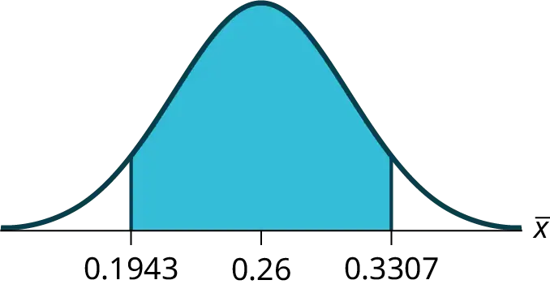
EBM: 0.0707
72. Suppose we want to lower the sampling error. What is one way to accomplish that?
73. The sampling error given in the survey is ±2%. Explain what the ±2% means.
Answer
The sampling error means that the true mean can be 2% above or below the sample mean.
Use the following information to answer the next five exercises: A poll of 1,200 voters asked what the most significant issue was in the upcoming election. Sixty-five percent answered the economy. We are interested in the population proportion of voters who feel the economy is the most important.
74. Define the random variable X in words.
75. Define the random variable P′ in words.
Answer
P′ is the proportion of voters sampled who said the economy is the most important issue in the upcoming election.
76. Which distribution should you use for this problem?
77. Construct a 90% confidence interval, and state the confidence interval and the error bound.
Answer
CI: (0.62735, 0.67265)
EBM: 0.02265
78. What would happen to the confidence interval if the level of confidence were 95%?
Use the following information to answer the next 16 exercises: The Ice Chalet offers dozens of different beginning ice-skating classes. All of the class names are put into a bucket. The 5 P.M., Monday night, ages 8 to 12, beginning ice-skating class was picked. In that class were 64 girls and 16 boys. Suppose that we are interested in the true proportion of girls, ages 8 to 12, in all beginning ice-skating classes at the Ice Chalet. Assume that the children in the selected class are a random sample of the population.
79. What is being counted?
Answer
The number of girls, ages 8 to 12, in the 5 P.M. Monday night beginning ice-skating class.
80. In words, define the random variable X.
81. Calculate the following:
- x = _______
- n = _______
- p′ = _______
Answer
- x = 64
- n = 80
- p′ = 0.8
82. State the estimated distribution of X. X~________
83. Define a new random variable P′. What is p′ estimating?
Answer
p
84. In words, define the random variable P′.
85. State the estimated distribution of P′. Construct a 92% Confidence Interval for the true proportion of girls in the ages 8 to 12 beginning ice-skating classes at the Ice Chalet.
Answer
\(P'\sim N\left( 0.8,\sqrt{\frac{(0.8)(0.2)}{80}} \right)\). (0.72171, 0.87829).
86. How much area is in both tails (combined)?
87. How much area is in each tail?
Answer
0.04
88. Calculate the following:
- lower limit
- upper limit
- error bound
89. The 92% confidence interval is _______.
Answer
(0.72; 0.88)
90. Fill in the blanks on the graph with the areas, upper and lower limits of the confidence interval, and the sample proportion.
91. In one complete sentence, explain what the interval means.
Answer
With 92% confidence, we estimate the proportion of girls, ages 8 to 12, in a beginning ice-skating class at the Ice Chalet to be between 72% and 88%.
92. Using the same p′ and level of confidence, suppose that n were increased to 100. Would the error bound become larger or smaller? How do you know?
93. Using the same p′ and n = 80, how would the error bound change if the confidence level were increased to 98%? Why?
Answer
The error bound would increase. Assuming all other variables are kept constant, as the confidence level increases, the area under the curve corresponding to the confidence level becomes larger, which creates a wider interval and thus a larger error.
94. If you decreased the allowable error bound, why would the minimum sample size increase (keeping the same level of confidence)?
Homework¶
8.1 A Single Population Mean using the Normal Distribution¶
95. Among various ethnic groups, the standard deviation of heights is known to be approximately three inches. We wish to construct a 95% confidence interval for the mean height of male Swedes. Forty-eight male Swedes are surveyed. The sample mean is 71 inches. The sample standard deviation is 2.8 inches.
a. i. \(\bar{x}\) =________
ii. σ =________
iii. n =________
b. In words, define the random variables X and \(\bar{X}\).
c. Which distribution should you use for this problem? Explain your choice.
d. Construct a 95% confidence interval for the population mean height of male Swedes.
i. State the confidence interval.
ii. Sketch the graph.
iii. Calculate the error bound.
e. What will happen to the level of confidence obtained if 1,000 male Swedes are surveyed instead of 48? Why?
Answer
a. i. 71
ii. 3
iii. 48
b. X is the height of a Swiss male, and is the mean height from a sample of 48 Swiss males.
c. Normal. We know the standard deviation for the population, and the sample size is greater than 30.
d. i. CI: (70.151, 71.49)
ii.
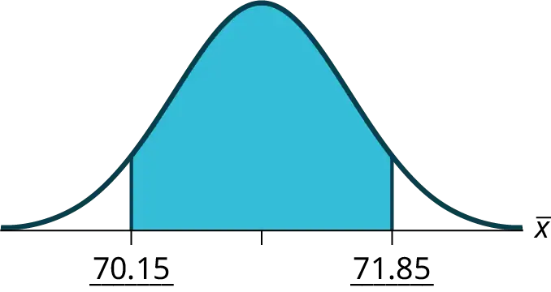
iii. EBM = 0.849
e. The confidence interval will decrease in size, because the sample size increased. Recall, when all factors remain unchanged, an increase in sample size decreases variability. Thus, we do not need as large an interval to capture the true population mean.
96. Announcements for 84 upcoming engineering conferences were randomly picked from a stack of IEEE Spectrum magazines. The mean length of the conferences was 3.94 days, with a standard deviation of 1.28 days. Assume the underlying population is normal.
a. In words, define the random variables X and \(\bar{X}\).
b. Which distribution should you use for this problem? Explain your choice.
c. Construct a 95% confidence interval for the population mean length of engineering conferences.
i. State the confidence interval.
ii. Sketch the graph.
iii. Calculate the error bound.
97. Suppose that an accounting firm does a study to determine the time needed to complete one person’s tax forms. It randomly surveys 100 people. The sample mean is 23.6 hours. There is a known standard deviation of 7.0 hours. The population distribution is assumed to be normal.
a. i. \(\bar{x}\) =________
ii. σ =________
iii. n =________
b. In words, define the random variables X and \(\bar{X}\).
c. Which distribution should you use for this problem? Explain your choice.
d. Construct a 90% confidence interval for the population mean time to complete the tax forms.
i. State the confidence interval.
ii. Sketch the graph.
iii. Calculate the error bound.
e. If the firm wished to increase its level of confidence and keep the error bound the same by taking another survey, what changes should it make?
f. If the firm did another survey, kept the error bound the same, and only surveyed 49 people, what would happen to the level of confidence? Why?
g. Suppose that the firm decided that it needed to be at least 96% confident of the population mean length of time to within one hour. How would the number of people the firm surveys change? Why?
Answer
a. i. \(\bar{x}\) = 23.6
ii. \(\sigma\) = 7
iii. n = 100
b. X is the time needed to complete an individual tax form. \(\bar{X}\) is the mean time to complete tax forms from a sample of 100 customers.
c. \(N\left( 23.6,\frac{7}{\sqrt{100}} \right)\) because we know sigma.
d. i. (22.228, 24.972)
ii.
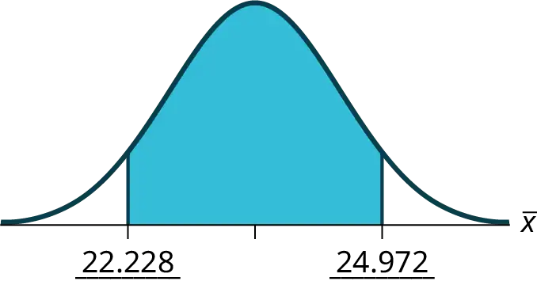
iii. EBM = 1.372
e. It will need to change the sample size. The firm needs to determine what the confidence level should be, then apply the error bound formula to determine the necessary sample size.
f. The confidence level would increase as a result of a larger interval. Smaller sample sizes result in more variability. To capture the true population mean, we need to have a larger interval.
g. According to the error bound formula, the firm needs to survey 206 people. Since we increase the confidence level, we need to increase either our error bound or the sample size.
98. A sample of 16 small bags of the same brand of candies was selected. Assume that the population distribution of bag weights is normal. The weight of each bag was then recorded. The mean weight was two ounces with a standard deviation of 0.12 ounces. The population standard deviation is known to be 0.1 ounce.
a. i. \(\bar{x}\) =________
ii. σ =________
iii. sx =________
b. In words, define the random variable X.
c. In words, define the random variable \(\bar{X}\).
d. Which distribution should you use for this problem? Explain your choice.
e. Construct a 90% confidence interval for the population mean weight of the candies.
i. State the confidence interval.
ii. Sketch the graph.
iii. Calculate the error bound.
f. Construct a 98% confidence interval for the population mean weight of the candies.
i. State the confidence interval.
ii. Sketch the graph.
iii. Calculate the error bound.
g. In complete sentences, explain why the confidence interval in part f is larger than the confidence interval in part e.
h. In complete sentences, give an interpretation of what the interval in part f means.
99. A camp director is interested in the mean number of letters each child sends during their camp session. The population standard deviation is known to be 2.5. A survey of 20 campers is taken. The mean from the sample is 7.9 with a sample standard deviation of 2.8.
a. i. \(\bar{x}\) =________
ii. σ =________
iii. n =________
b. Define the random variables X and \(\bar{X}\) in words.
c. Which distribution should you use for this problem? Explain your choice.
d. Construct a 90% confidence interval for the population mean number of letters campers send home.
i. State the confidence interval.
ii. Sketch the graph.
iii. Calculate the error bound.
e. What will happen to the error bound and confidence interval if 500 campers are surveyed? Why?
Answer
a. i. 7.9
ii. 2.5
iii. 20
b. X is the number of letters a single camper will send home. \(\bar{X}\) is the mean number of letters sent home from a sample of 20 campers.
c. N \(7.9\left( \frac{2.5}{\sqrt{20}} \right)\)
d. i. CI: (6.98, 8.82)
ii.
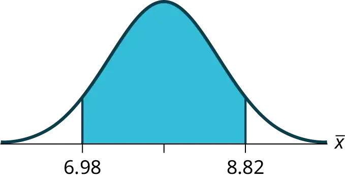
iii. EBM: 0.92
e. The error bound and confidence interval will decrease.
100. What is meant by the term “90% confident” when constructing a confidence interval for a mean?
- If we took repeated samples, approximately 90% of the samples would produce the same confidence interval.
- If we took repeated samples, approximately 90% of the confidence intervals calculated from those samples would contain the sample mean.
- If we took repeated samples, approximately 90% of the confidence intervals calculated from those samples would contain the true value of the population mean.
- If we took repeated samples, the sample mean would equal the population mean in approximately 90% of the samples.
101. The Federal Election Commission collects information about campaign contributions and disbursements for candidates and political committees each election cycle. During a certain campaign season, there were 1,619 candidates for the House of Representatives across the United States who received contributions from individuals. Table 8.11 shows the total receipts from individuals for a random selection of 40 House candidates rounded to the nearest $100. The standard deviation for this data to the nearest hundred is σ = $909,200.
Table 8.11
| $3,600 | $1,243,900 | $10,900 | $385,200 | $581,500 |
| $7,400 | $2,900 | $400 | $3,714,500 | $632,500 |
| $391,000 | $467,400 | $56,800 | $5,800 | $405,200 |
| $733,200 | $8,000 | $468,700 | $75,200 | $41,000 |
| $13,300 | $9,500 | $953,800 | $1,113,500 | $1,109,300 |
| $353,900 | $986,100 | $88,600 | $378,200 | $13,200 |
| $3,800 | $745,100 | $5,800 | $3,072,100 | $1,626,700 |
| $512,900 | $2,309,200 | $6,600 | $202,400 | $15,800 |
- Find the point estimate for the population mean.
- Using 95% confidence, calculate the error bound.
- Create a 95% confidence interval for the mean total individual contributions.
- Interpret the confidence interval in the context of the problem.
Answer
a. \(\bar{x}\) = $568,873
b. CL = 0.95 α = 1 – 0.95 = 0.05 \(z_{\frac{\alpha}{2}}\) = 1.96
EBM = \(z_{0.025}\frac{\sigma}{\sqrt{n}}\) = 1.96 \(\frac{909200}{\sqrt{40}}\) = $281,764
c. \(\bar{x}\) − EBM = 568,873 − 281,764 = 287,109
\(\bar{x}\) + EBM = 568,873 + 281,764 = 850,637
Alternate solution:
Using the Calculator
-
Press
STATand arrow over toTESTS. -
Arrow down to
7:ZInterval. -
Press
ENTER. -
Arrow to Stats and press
ENTER. -
Arrow down and enter the following values:
σ : 909,200
\(\bar{x}\): 568,873
n: 40
CL: 0.95
-
Arrow down to Calculate and press
ENTER. -
The confidence interval is ($287,114, $850,632).
-
Notice the small difference between the two solutions–these differences are simply due to rounding error in the hand calculations.
d. We estimate with 95% confidence that the mean amount of contributions received from all individuals by House candidates is between $287,109 and $850,637.
102. The American Community Survey (ACS), part of the United States Census Bureau, conducts a yearly census similar to the one taken every ten years, but with a smaller percentage of participants. The recent survey estimates with 90% confidence that the mean household income in the U.S. falls between $69,720 and $69,922. Find the point estimate for mean U.S. household income and the error bound for mean U.S. household income.
103. The average height of young adult males has a normal distribution with standard deviation of 2.5 inches. You want to estimate the mean height of students at your college or university to within one inch with 93% confidence. How many male students must you measure?
Answer
Use the formula for EBM, solved for n:
\(n=\frac{z^{2}\sigma^{2}}{EBM^{2}}\)
From the statement of the problem, you know that σ = 2.5, and you need EBM = 1.
z = z0.035 = 1.812
(This is the value of z for which the area under the density curve to the right of z is 0.035.)
\(n=\frac{z^{2}\sigma^{2}}{EBM^{2}}=\frac{{1.812}^{2}{2.5}^{2}}{1^{2}}\approx 20.52\)
You need to measure at least 21 male students to achieve your goal.
8.2 A Single Population Mean using the Student t Distribution¶
104. In six packages of “The Flintstones® Real Fruit Snacks” there were five Bam-Bam snack pieces. The total number of snack pieces in the six bags was 68. We wish to calculate a 96% confidence interval for the population proportion of Bam-Bam snack pieces.
a. Define the random variables X and P′ in words.
b. Which distribution should you use for this problem? Explain your choice
c. Calculate p′.
d. Construct a 96% confidence interval for the population proportion of Bam-Bam snack pieces per bag.
i. State the confidence interval.
ii. Sketch the graph.
iii. Calculate the error bound.
e. Do you think that six packages of fruit snacks yield enough data to give accurate results? Why or why not?
105. A random survey of enrollment at 35 community colleges across the United States yielded the following figures: 6,414; 1,550; 2,109; 9,350; 21,828; 4,300; 5,944; 5,722; 2,825; 2,044; 5,481; 5,200; 5,853; 2,750; 10,012; 6,357; 27,000; 9,414; 7,681; 3,200; 17,500; 9,200; 7,380; 18,314; 6,557; 13,713; 17,768; 7,493; 2,771; 2,861; 1,263; 7,285; 28,165; 5,080; 11,622. Assume the underlying population is normal.
a. i. \(\bar{x}\) = __________
ii. \(s_{x}\) = __________
iii. n = __________
iv. n – 1 = __________
b. Define the random variables \(X\) and \(\bar{X}\) in words.
c. Which distribution should you use for this problem? Explain your choice.
d. Construct a 95% confidence interval for the population mean enrollment at community colleges in the United States.
i. State the confidence interval.
ii. Sketch the graph.
iii. Calculate the error bound.
e. What will happen to the error bound and confidence interval if 500 community colleges were surveyed? Why?
Answer
a. i. 8629
ii. 6944
iii. 35
iv. 34
b. \(t_{34}\)
c. i. CI: (6244, 11,014)
ii.
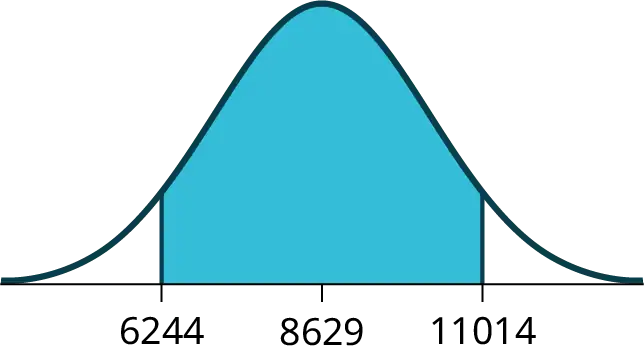
iii. EB = 2385
d. It will become smaller
106. Suppose that a committee is studying whether or not there is waste of time in our judicial system. It is interested in the mean amount of time individuals waste at the courthouse waiting to be called for jury duty. The committee randomly surveyed 81 people who recently served as jurors. The sample mean wait time was eight hours with a sample standard deviation of four hours.
a. i. \(\bar{x}\) = __________
ii. \(s_{x}\) = __________
iii. n = __________
iv. n – 1 = __________
b. Define the random variables \(X\) and \(\bar{X}\) in words.
c. Which distribution should you use for this problem? Explain your choice.
d. Construct a 95% confidence interval for the population mean time wasted.
i. State the confidence interval.
ii. Sketch the graph.
iii. Calculate the error bound.
e. Explain in a complete sentence what the confidence interval means.
107. A pharmaceutical company makes tranquilizers. It is assumed that the distribution for the length of time they last is approximately normal. Researchers in a hospital used the drug on a random sample of nine patients. The effective period of the tranquilizer for each patient (in hours) was as follows: 2.7; 2.8; 3.0; 2.3; 2.3; 2.2; 2.8; 2.1; and 2.4.
a. i. \(\bar{x}\) = __________
ii. \(s_{x}\) = __________
iii. n = __________
iv. n – 1 = __________
b. Define the random variable \(X\) in words.
c. Define the random variable \(\bar{X}\) in words.
d. Which distribution should you use for this problem? Explain your choice.
e. Construct a 95% confidence interval for the population mean length of time.
i. State the confidence interval.
ii. Sketch the graph.
iii. Calculate the error bound.
f. What does it mean to be “95% confident” in this problem?
Answer
a. i. \(\bar{x}\) = 2.51
ii. \(s_{x}\) = 0.318
iii. n = 9
iv. n - 1 = 8
b. the effective length of time for a tranquilizer
c. the mean effective length of time of tranquilizers from a sample of nine patients
d. We need to use a Student’s-t distribution, because we do not know the population standard deviation.
e. i. CI: (2.27, 2.76)
ii. Answers may vary.
iii. EBM: 0.25
f. If we were to sample many groups of nine patients, 95% of the samples would contain the true population mean length of time.
108. Suppose that 14 children, who were learning to ride two-wheel bikes, were surveyed to determine how long they had to use training wheels. It was revealed that they used them an average of six months with a sample standard deviation of three months. Assume that the underlying population distribution is normal.
a. i. \(\bar{x}\) = __________
ii. \(s_{x}\) = __________
iii. n = __________
iv. n – 1 = __________
b. Define the random variable \(X\) in words.
c. Define the random variable\(\bar{X}\) in words.
d. Which distribution should you use for this problem? Explain your choice.
e. Construct a 99% confidence interval for the population mean length of time using training wheels.
i. State the confidence interval.
ii. Sketch the graph.
iii. Calculate the error bound.
f. Why would the error bound change if the confidence level were lowered to 90%?
109. The Federal Election Commission (FEC) collects information about campaign contributions and disbursements for candidates and political committees each election cycle. A political action committee (PAC) is a committee formed to raise money for candidates and campaigns. A Leadership PAC is a PAC formed by a federal politician (senator or representative) to raise money to help other candidates’ campaigns.
The FEC has reported financial information for 556 Leadership PACs that operating during a certain election cycle. The following table shows the total receipts during this cycle for a random selection of 30 Leadership PACs.
Table 8.12
| $46,500.00 | $0 | $40,966.50 | $105,887.20 | $5,175.00 |
| $29,050.00 | $19,500.00 | $181,557.20 | $31,500.00 | $149,970.80 |
| $2,555,363.20 | $12,025.00 | $409,000.00 | $60,521.70 | $18,000.00 |
| $61,810.20 | $76,530.80 | $119,459.20 | $0 | $63,520.00 |
| $6,500.00 | $502,578.00 | $705,061.10 | $708,258.90 | $135,810.00 |
| $2,000.00 | $2,000.00 | $0 | $1,287,933.80 | $219,148.30 |
\(\bar{x}=\$251,854.23\)
\(s=\ \$521,130.41\)
Use this sample data to construct a 96% confidence interval for the mean amount of money raised by all Leadership PACs during the specific election cycle. Use the Student's t-distribution.
Answer
\(\bar{x}=\$251,854.23\)
\(s=\ \$521,130.41\)
Note that we are not given the population standard deviation, only the standard deviation of the sample.
There are 30 measures in the sample, so n = 30, and df = 30 - 1 = 29
CL = 0.96, so α = 1 - CL = 1 - 0.96 = 0.04
\(\frac{\alpha}{2}=0.02t_{\frac{\alpha}{2}}=t_{0.02}\) = 2.150
\(EBM=t_{\frac{\alpha}{2}}\left( \frac{s}{\sqrt{n}} \right)=2.150\left( \frac{521,130.41}{\sqrt{30}} \right)\sim\$204,561.66\)
\(\bar{x}\) - EBM = $251,854.23 - $204,561.66 = $47,292.57
\(\bar{x}\) + EBM = $251,854.23+ $204,561.66 = $456,415.89
We estimate with 96% confidence that the mean amount of money raised by all Leadership PACs during the specific election cycle lies between $47,292.57 and $456,415.89.
Alternate Solution
Using the Calculator
Enter the data as a list.
Press STAT and arrow over to TESTS.
Arrow down to 8:TInterval.
Press ENTER.
Arrow to Data and press ENTER.
Arrow down and enter the name of the list where the data is stored.
Enter Freq: 1
Enter C-Level: 0.96
Arrow down to Calculate and press Enter.
The 96% confidence interval is ($47,262, $456,447).
The difference between solutions arises from rounding differences.
110. Forbes magazine published data on the best small firms in a certain year. These were firms that had been publicly traded for at least a year, have a stock price of at least $5 per share, and have reported annual revenue between $5 million and $1 billion. The Table 8.13 shows the ages of the corporate CEOs for a random sample of these firms.
Table 8.13
| 48 | 58 | 51 | 61 | 56 |
| 59 | 74 | 63 | 53 | 50 |
| 59 | 60 | 60 | 57 | 46 |
| 55 | 63 | 57 | 47 | 55 |
| 57 | 43 | 61 | 62 | 49 |
| 67 | 67 | 55 | 55 | 49 |
Use this sample data to construct a 90% confidence interval for the mean age of CEO’s for these top small firms. Use the Student's t-distribution.
111. Unoccupied seats on flights cause airlines to lose revenue. Suppose a large airline wants to estimate its mean number of unoccupied seats per flight over the past year. To accomplish this, the records of 225 flights are randomly selected and the number of unoccupied seats is noted for each of the sampled flights. The sample mean is 11.6 seats and the sample standard deviation is 4.1 seats.
a. i. \(\bar{x}\) = __________
ii. \(s_{x}\) = __________
iii. n = __________
iv. n-1 = __________
b. Define the random variables \(X\) and \(\bar{X}\) in words.
c. Which distribution should you use for this problem? Explain your choice.
d. Construct a 92% confidence interval for the population mean number of unoccupied seats per flight.
i. State the confidence interval.
ii. Sketch the graph.
iii. Calculate the error bound.
Answer
a. i. \(\bar{x}\) = 11.6
ii. \(s_{x}\) = 4.1
iii. n = 225
iv. n - 1 = 224
b. X is the number of unoccupied seats on a single flight. \(\bar{X}\) is the mean number of unoccupied seats from a sample of 225 flights.
c. We will use a Student’s-t distribution, because we do not know the population standard deviation.
d. i. CI: (11.12 , 12.08)
ii. Answers may vary.
iii. EBM: 0.48
112. In a recent sample of 84 used car sales costs, the sample mean was $6,425 with a standard deviation of $3,156. Assume the underlying distribution is approximately normal.
a. Which distribution should you use for this problem? Explain your choice.
b. Define the random variable \(\bar{X}\) in words.
c. Construct a 95% confidence interval for the population mean cost of a used car.
i. State the confidence interval.
ii. Sketch the graph.
iii. Calculate the error bound.
d. Explain what a “95% confidence interval” means for this study.
113. Six different national brands of chocolate chip cookies were randomly selected at the supermarket. The grams of fat per serving are as follows: 8; 8; 10; 7; 9; 9. Assume the underlying distribution is approximately normal.
a. Construct a 90% confidence interval for the population mean grams of fat per serving of chocolate chip cookies sold in supermarkets.
i. State the confidence interval.
ii. Sketch the graph.
iii. Calculate the error bound.
b. If you wanted a smaller error bound while keeping the same level of confidence, what should have been changed in the study before it was done?
c. Go to the store and record the grams of fat per serving of six brands of chocolate chip cookies.
d. Calculate the mean.
e. Is the mean within the interval you calculated in part a? Did you expect it to be? Why or why not?
Answer
a. i. CI: (7.64 , 9.36)
ii.
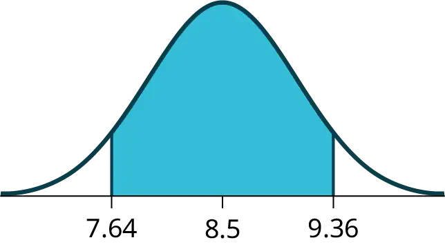
iii. EBM: 0.86
b. The sample should have been increased.
c. Answers will vary.
d. Answers will vary.
e. Answers will vary.
114. A survey of the mean number of cents off that coupons give was conducted by randomly surveying one coupon per page from the coupon sections of a recent San Jose Mercury News. The following data were collected: 20¢; 75¢; 50¢; 65¢; 30¢; 55¢; 40¢; 40¢; 30¢; 55¢; $1.50; 40¢; 65¢; 40¢. Assume the underlying distribution is approximately normal.
a. i. \(\bar{x}\) = __________
ii. \(s_{x}\) = __________
iii. n = __________
iv. n-1 = __________
b. Define the random variables \(X\) and \(\bar{X}\) in words.
c. Which distribution should you use for this problem? Explain your choice.
d. Construct a 95% confidence interval for the population mean worth of coupons.
i. State the confidence interval.
ii. Sketch the graph.
iii. Calculate the error bound.
e. If many random samples were taken of size 14, what percent of the confidence intervals constructed should contain the population mean worth of coupons? Explain why.
Use the following information to answer the next two exercises: A quality control specialist for a restaurant chain takes a random sample of size 12 to check the amount of soda served in the 16 oz. serving size. The sample mean is 13.30 with a sample standard deviation of 1.55. Assume the underlying population is normally distributed.
115. Find the 95% Confidence Interval for the true population mean for the amount of soda served.
- (12.42, 14.18)
- (12.32, 14.29)
- (12.50, 14.10)
- Impossible to determine
Answer
b
116. What is the error bound?
- 0.87
- 1.98
- 0.99
- 1.74
8.3 A Population Proportion¶
117. Insurance companies are interested in knowing the population percent of drivers who always buckle up before riding in a car.
- When designing a study to determine this population proportion, what is the minimum number you would need to survey to be 95% confident that the population proportion is estimated to within 0.03?
- If it were later determined that it was important to be more than 95% confident and a new survey was commissioned, how would that affect the minimum number you would need to survey? Why?
Answer
- 1,068
- The sample size would need to be increased since the critical value increases as the confidence level increases.
118. Suppose that the insurance companies did do a survey. They randomly surveyed 400 drivers and found that 320 claimed they always buckle up. We are interested in the population proportion of drivers who claim they always buckle up.
a. i. x = __________
ii. n = __________
iii. p′ = __________
b. Define the random variables X and P′, in words.
c. Which distribution should you use for this problem? Explain your choice.
d. Construct a 95% confidence interval for the population proportion who claim they always buckle up.
i. State the confidence interval.
ii. Sketch the graph.
iii. Calculate the error bound.
e. If this survey were done by telephone, list three difficulties the companies might have in obtaining random results.
119. According to a recent survey of 1,200 people, 61% feel that the president is doing an acceptable job. We are interested in the population proportion of people who feel the president is doing an acceptable job.
a. Define the random variables X and P′ in words.
b. Which distribution should you use for this problem? Explain your choice.
c. Construct a 90% confidence interval for the population proportion of people who feel the president is doing an acceptable job.
i. State the confidence interval.
ii. Sketch the graph.
iii. Calculate the error bound.
Answer
a. X = the number of people who feel that the president is doing an acceptable job;
P′ = the proportion of people in a sample who feel that the president is doing an acceptable job.
b. \(N\left( 0.61,\sqrt{\frac{(0.61)(0.39)}{1200}} \right)\)
c. i. CI: (0.59, 0.63)
ii. Answers may vary.
iii. EBM: 0.02
120. An article regarding interracial dating and marriage recently appeared in the Washington Post. Of the 1,709 randomly selected adults, 315 identified themselves as Hispanic/Latino, 323 identified themselves as Black, 254 identified themselves as Asian, and 779 identified themselves as White. In this survey, 86% of Black people said that they would welcome a White person into their families. Among Asian people, 77% would welcome a White person into their families, 71% would welcome a Hispanic/Latino person, and 66% would welcome a Black person.
a. We are interested in finding the 95% confidence interval for the percent of all Black adults who would welcome a White person into their families. Define the random variables X and P′, in words.
b. Which distribution should you use for this problem? Explain your choice.
c. Construct a 95% confidence interval.
i. State the confidence interval.
ii. Sketch the graph.
iii. Calculate the error bound.
121. Refer to the information in Exercise 120.
a. Construct three 95% confidence intervals.
i. percent of all Asians who would welcome a White person into their families.
ii. percent of all Asians who would welcome a Hispanic/Latino into their families.
iii. percent of all Asians who would welcome a Black person into their families.
b. Even though the three point estimates are different, do any of the confidence intervals overlap? Which?
c. For any intervals that do overlap, in words, what does this imply about the significance of the differences in the true proportions?
d. For any intervals that do not overlap, in words, what does this imply about the significance of the differences in the true proportions?
Answer
a. i. (0.72, 0.82)
ii. (0.65, 0.76)
iii. (0.60, 0.72)
b. Yes, the intervals (0.72, 0.82) and (0.65, 0.76) overlap, and the intervals (0.65, 0.76) and (0.60, 0.72) overlap.
c. We can say that there does not appear to be a significant difference between the proportion of Asian adults who say that their families would welcome a White person into their families and the proportion of Asian adults who say that their families would welcome a Hispanic/Latino person into their families.
d. We can say that there is a significant difference between the proportion of Asian adults who say that their families would welcome a White person into their families and the proportion of Asian adults who say that their families would welcome a Black person into their families.
122. Stanford University conducted a study of whether running is healthy for people over age 50. During the first eight years of the study, 1.5% of the 451 members of the 50-Plus Fitness Association died. We are interested in the proportion of people over 50 who ran and died in the same eight-year period.
a. Define the random variables X and P′ in words.
b. Which distribution should you use for this problem? Explain your choice.
c. Construct a 97% confidence interval for the population proportion of people over 50 who ran and died in the same eight–year period.
i. State the confidence interval.
ii. Sketch the graph.
iii. Calculate the error bound.
d. Explain what a “97% confidence interval” means for this study.
A telephone poll of 1,000 adult Americans was reported in an issue of Time Magazine. One of the questions asked was “What is the main problem facing the country?” Twenty percent answered “crime.” We are interested in the population proportion of adult Americans who feel that crime is the main problem.
a. Define the random variables X and P′ in words.
b. Which distribution should you use for this problem? Explain your choice.
c. Construct a 95% confidence interval for the population proportion of adult Americans who feel that crime is the main problem.
i. State the confidence interval.
ii. Sketch the graph.
iii. Calculate the error bound.
d. Suppose we want to lower the sampling error. What is one way to accomplish that?
e. The sampling error given by Yankelovich Partners, Inc. (which conducted the poll) is ±3%. In one to three complete sentences, explain what the ±3% represents.
Answer
a. X = the number of adult Americans who feel that crime is the main problem; \(p'\) = the proportion of adult Americans who feel that crime is the main problem
b. Since we are estimating a proportion, given \(p'\) = 0.2 and n = 1000, the distribution we should use is \(N\left( 0.2,\sqrt{\frac{(0.2)(0.8)}{1000}} \right)\).
c. i. CI: (0.18, 0.22)
ii. Answers may vary.
iii. EBM: 0.02
d. One way to lower the sampling error is to increase the sample size.
e. The stated “± 3%” represents the maximum error bound. This means that those doing the study are reporting a maximum error of 3%. Thus, they estimate the percentage of adult Americans who feel that crime is the main problem to be between 18% and 22%.
Refer to see the text. Another question in the poll was “[How much are] you worried about the quality of education in our schools?” Sixty-three percent responded “a lot”. We are interested in the population proportion of adult Americans who are worried a lot about the quality of education in our schools.
a. Define the random variables X and P′ in words.
b. Which distribution should you use for this problem? Explain your choice.
c. Construct a 95% confidence interval for the population proportion of adult Americans who are worried a lot about the quality of education in our schools.
i. State the confidence interval.
ii. Sketch the graph.
iii. Calculate the error bound.
d. The sampling error given by Yankelovich Partners, Inc. (which conducted the poll) is ±3%. In one to three complete sentences, explain what the ±3% represents.
Use the following information to answer the next three exercises: According to a Field Poll, 79% of Georgia adults (actual results are 400 out of 506 surveyed) feel that “education and our schools” is one of the top issues facing the state. We wish to construct a 90% confidence interval for the true proportion of Georgia adults who feel that education and the schools is one of the top issues facing Georgia.
123. A point estimate for the true population proportion is:
- 0.90
- 1.27
- 0.79
- 400
Answer
c
124. A 90% confidence interval for the population proportion is _______.
- (0.761, 0.820)
- (0.125, 0.188)
- (0.755, 0.826)
- (0.130, 0.183)
125. The error bound is approximately _____.
- 1.581
- 0.791
- 0.059
- 0.030
Answer
d
Use the following information to answer the next two exercises: Five hundred and eleven (511) homes in a certain southern California community are randomly surveyed to determine if they meet minimal earthquake preparedness recommendations. One hundred seventy-three (173) of the homes surveyed met the minimum recommendations for earthquake preparedness, and 338 did not.
126. Find the confidence interval at the 90% Confidence Level for the true population proportion of southern California community homes meeting at least the minimum recommendations for earthquake preparedness.
- (0.2975, 0.3796)
- (0.6270, 0.6959)
- (0.3041, 0.3730)
- (0.6204, 0.7025)
127. The point estimate for the population proportion of homes that do not meet the minimum recommendations for earthquake preparedness is ______.
- 0.6614
- 0.3386
- 173
- 338
Answer
a
128. In a specific year, Gallup reported that of the 1,005 people surveyed, 76% of U.S. workers believe that they will continue working past retirement age. The confidence level for this study was reported at 95% with a ±3% margin of error.
- Determine the estimated proportion from the sample.
- Determine the sample size.
- Identify CL and α.
- Calculate the error bound based on the information provided.
- Compare the error bound in part d to the margin of error reported by Gallup. Explain any differences between the values.
- Create a confidence interval for the results of this study.
- A reporter is covering the release of this study for a local news station. How should she explain the confidence interval to her audience?
129. A national survey of 1,000 adults was conducted by Rasmussen Reports. It concluded with 95% confidence that 49% to 55% of Americans believe that big-time college sports programs corrupt the process of higher education.
- Find the point estimate and the error bound for this confidence interval.
- Can we (with 95% confidence) conclude that more than half of all American adults believe this?
- Use the point estimate from part a and n = 1,000 to calculate a 75% confidence interval for the proportion of American adults that believe that major college sports programs corrupt higher education.
- Can we (with 75% confidence) conclude that at least half of all American adults believe this?
Answer
a. \(p'\) = \(\frac{\text{(0}\text{.55 + 0}\text{.49)}}{2}\) = 0.52; EBP = 0.55 - 0.52 = 0.03
b. No, the confidence interval includes values less than or equal to 0.50. It is possible that less than half of the population believe this.
c. CL = 0.75, so α = 1 – 0.75 = 0.25 and \(\frac{\alpha}{2}=0.125z_{\frac{\alpha}{2}}=1.150\). (The area to the right of this z is 0.125, so the area to the left is 1 – 0.125 = 0.875.)
\(EBP=(1.150)\sqrt{\frac{0.52(0.48)}{1,000}}\approx 0.018\)
(p′ - EBP, p′ + EBP) = (0.52 – 0.018, 0.52 + 0.018) = (0.502, 0.538)
Alternate Solution
Using the Calculator
STAT TESTS A: 1-PropZinterval with x = (0.52)(1,000), n = 1,000, CL = 0.75.
Answer is (0.502, 0.538)
d. Yes – this interval does not fall less than 0.50 so we can conclude that at least half of all American adults believe that major sports programs corrupt education – but we do so with only 75% confidence.
130. Public Policy Polling recently conducted a survey asking adults across the U.S. about music preferences. When asked, 80 of the 571 participants admitted that they have illegally downloaded music.
- Create a 99% confidence interval for the true proportion of American adults who have illegally downloaded music.
- This survey was conducted through automated telephone interviews. The error bound of the survey compensates for sampling error, or natural variability among samples. List some factors that could affect the survey’s outcome that are not covered by the margin of error.
- Without performing any calculations, describe how the confidence interval would change if the confidence level changed from 99% to 90%.
131. You plan to conduct a survey on your college campus to learn about the political awareness of students. You want to estimate the true proportion of college students on your campus who voted in the 2020 presidential election with 95% confidence and a margin of error no greater than five percent. How many students must you interview?
Answer
CL = 0.95 α = 1 – 0.95 = 0.05 \(\frac{\alpha}{2}\) = 0.025 \(z_{\frac{\alpha}{2}}\) = 1.96. Use p′ = q′ = 0.5.
\(n=\frac{z_{\frac{\alpha}{2}}{}^{2}p'q'}{EBP^{2}}=\frac{{1.96}^{2}(0.5)(0.5)}{{0.05}^{2}}=384.16\)
You need to interview at least 385 students to estimate the proportion to within 5% at 95% confidence.
132. In a recent Zogby International Poll, nine of 48 respondents rated the likelihood of a terrorist attack in their community as “likely” or “very likely.” Use the “plus four” method to create a 97% confidence interval for the proportion of American adults who believe that a terrorist attack in their community is likely or very likely. Explain what this confidence interval means in the context of the problem.
Adapted from Introductory Statistics 2e by OpenStax, licensed under CC BY 4.0. Access the original for free at openstax.org. Changes: converted to the web reading format of The Open Book Project.